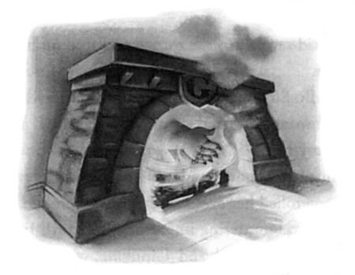

“Well, I know it can’t be fun when it hurts, but we don’t think it’s anything to really worry about. It kept aching all last year, didn’t it?”
“Yeah, and Dumbledore said it happened whenever Voldemort was feeling a powerful emotion,” said Harry, ignoring, as usual, Ron and Hermione’s winces. “So maybe he was just, I dunno, really angry or something the night I had that detention.”
“Well, now he’s back it’s bound to hurt more often,” said Sirius.
“So you don’t think it had anything to do with Umbridge touching me when I was in detention with her?” Harry asked.
“I doubt it,” said Sirius. “I know her by reputation and I’m sure she’s no Death Eater —”
“She’s foul enough to be one,” said Harry darkly and Ron and Hermione nodded vigorously in agreement.
“Yes, but the world isn’t split into good people and Death Eaters,”
said Sirius with a wry smile. “I know she’s a nasty piece of work, though — you should hear Remus talk about her.”
“Does Lupin know her?” asked Harry quickly, remembering Umbridge’s comments about dangerous half-breeds during her first lesson.
“No,” said Sirius, “but she drafted a bit of anti-werewolf legislation two years ago that makes it almost impossible for him to get a job.”
Harry remembered how much shabbier Lupin looked these days and his dislike of Umbridge deepened even further.
“What’s she got against werewolves?” said Hermione angrily.
“Scared of them, I expect,” said Sirius, smiling at her indignation.
“Apparently she loathes part-humans; she campaigned to have merpeople rounded up and tagged last year too. Imagine wasting your
302
PERCY AND PADFOOT
time and energy persecuting merpeople when there are little toerags like Kreacher on the loose —”
Ron laughed but Hermione looked upset.
“Sirius!” she said reproachfully. “Honestly, if you made a bit of an effort with Kreacher I’m sure he’d respond, after all, you are the only member of his family he’s got left, and Professor Dumbledore said —”
“So what are Umbridge’s lessons like?” Sirius interrupted. “Is she training you all to kill half-breeds?”
“No,” said Harry, ignoring Hermione’s affronted look at being cut off in her defense of Kreacher. “She’s not letting us use magic at al !”
“All we do is read the stupid textbook,” said Ron.
“Ah, well, that figures,” said Sirius. “Our information from inside the Ministry is that Fudge doesn’t want you trained in combat.”
“Trained in combat?” repeated Harry incredulously. “What does he think we’re doing here, forming some sort of wizard army?”
“That’s exactly what he thinks you’re doing,” said Sirius, “or rather, that’s exactly what he’s afraid Dumbledore’s doing — forming his own private army, with which he will be able to take on the Ministry of Magic.”
There was a pause at this, then Ron said, “That’s the stupidest thing I’ve ever heard, including all the stuff that Luna Lovegood comes out with.”
“So we’re being prevented from learning Defense Against the Dark Arts because Fudge is scared we’ll use spells against the Ministry?” said Hermione, looking furious.
“Yep,” said Sirius. “Fudge thinks Dumbledore will stop at nothing to seize power. He’s getting more paranoid about Dumbledore by the day. It’s a matter of time before he has Dumbledore arrested on some trumped-up charge.”
This reminded Harry of Percy’s letter.
“D’you know if there’s going to be anything about Dumbledore in
303
CHAPTER FOURTEEN
the Daily Prophet tomorrow? Only Ron’s brother Percy reckons there will be —”
“I don’t know,” said Sirius, “I haven’t seen anyone from the Order all weekend, they’re all busy. It’s just been Kreacher and me here. . . .”
There was a definite note of bitterness in Sirius’s voice.
“So you haven’t had any news about Hagrid, either?”
“Ah . . .” said Sirius, “well, he was supposed to be back by now, no one’s sure what’s happened to him.” Then, seeing their stricken faces, he added quickly, “But Dumbledore’s not worried, so don’t you three get yourselves in a state; I’m sure Hagrid’s fine.”
“But if he was supposed to be back by now . . .” said Hermione in a small, worried voice.
“Madame Maxime was with him, we’ve been in touch with her and she says they got separated on the journey home — but there’s nothing to suggest he’s hurt or — well, nothing to suggest he’s not perfectly okay.”
Unconvinced, Harry, Ron, and Hermione exchanged worried looks.
“Listen, don’t go asking too many questions about Hagrid,” said Sirius hastily, “it’ll just draw even more attention to the fact that he’s not back, and I know Dumbledore doesn’t want that. Hagrid’s tough, he’ll be okay.” And when they did not appear cheered by this, Sirius added, “When’s your next Hogsmeade weekend anyway? I was thinking, we got away with the dog disguise at the station, didn’t we? I thought I could —”
“NO!” said Harry and Hermione together, very loudly.
“Sirius, didn’t you see the Daily Prophet?” said Hermione anxiously.
“Oh that,” said Sirius, grinning, “they’re always guessing where I am, they haven’t really got a clue —”
“Yeah, but we think this time they have,” said Harry. “Something Malfoy said on the train made us think he knew it was you, and his father was on the platform, Sirius — you know, Lucius Malfoy — so
304
PERCY AND PADFOOT
don’t come up here, whatever you do, if Malfoy recognizes you again —”
“All right, all right, I’ve got the point,” said Sirius. He looked most displeased. “Just an idea, thought you might like to get together —”
“I would, I just don’t want you chucked back in Azkaban!” said Harry.
There was a pause in which Sirius looked out of the fire at Harry, a crease between his sunken eyes.
“You’re less like your father than I thought,” he said finally, a definite coolness in his voice. “The risk would’ve been what made it fun for James.”
“Look —”
“Well, I’d better get going, I can hear Kreacher coming down the stairs,” said Sirius, but Harry was sure he was lying. “I’ll write to tell you a time I can make it back into the fire, then, shall I? If you can stand to risk it?”
There was a tiny pop, and the place where Sirius’s head had been was flickering flame once more.
305
C H A P T E R F I F T E E N
THE HOGWARTS
HIGH INQUISITOR
hey had expected to have to comb Hermione’s Daily Prophet T carefully next morning to find the article Percy had mentioned in his letter. However, the departing delivery owl had barely cleared the top of the milk jug when Hermione let out a huge gasp and flattened the newspaper to reveal a large photograph of Dolores Umbridge, smiling widely and blinking slowly at them from beneath the headline:
MINISTRY SEEKS EDUCATIONAL REFORM
DOLORES UMBRIDGE APPOINTED FIRST-EVER “HIGH INQUISITOR”
“‘High Inquisitor’?” said Harry darkly, his half-eaten bit of toast slipping from his fingers. “What does that mean?”
Hermione read aloud:
“In a surprise move last night the Ministry of Magic passed new legislation giving itself an unprecedented level of control at Hogwarts School of Witchcraft and Wizardry.
“ ‘ The Minister has been growing uneasy about goings-on at Hogwarts
306
THE HOGWARTS
HIGH INQUISITOR
for some time,’ said Junior Assistant to the Minister, Percy Weasley. ‘ He is now responding to concerns voiced by anxious parents, who feel the school may be moving in a direction they do not approve. ’
“This is not the first time in recent weeks Fudge has used new laws to effect improvements at the Wizarding school. As recently as August 30th Educational Decree Twenty-two was passed, to ensure that, in the event of the current headmaster being unable to provide a candidate for a teaching post, the Ministry should select an appropriate person.
“ ‘ That’s how Dolores Umbridge came to be appointed to the teaching staff at Hogwarts,’ said Weasley last night. ‘ Dumbledore couldn’t find anyone, so the Minister put in Umbridge and of course, she’s been an immediate success —’ ”
“She’s been a WHAT?” said Harry loudly.
“Wait, there’s more,” said Hermione grimly.
“ ‘— an immediate success, totally revolutionizing the teaching of Defense Against the Dark Arts and providing the Minister with on-the-ground feedback about what’s really happening at Hogwarts. ’
“It is this last function that the Ministry has now formalized with the passing of Educational Decree Twenty-three, which creates the new position of ‘ Hogwarts High Inquisitor. ’
“ ‘ This is an exciting new phase in the Minister’s plan to get to grips with what some are calling the “falling standards” at Hogwarts,’ said Weasley. ‘ The Inquisitor will have powers to inspect her fellow educators and make sure that they are coming up to scratch. Professor Umbridge has been offered this position in addition to her own teaching post, and we are delighted to say that she has accepted. ’
“The Ministry’s new moves have received enthusiastic support from parents of students at Hogwarts.
“ ‘ I feel much easier in my mind now that I know that Dumbledore is being subjected to fair and objective evaluation,’ said Mr. Lucius Malfoy, 41, speaking from his Wiltshire mansion last night. ‘Many of us with our children’s best interests at heart have been concerned about some of
307
CHAPTER FIFTEEN
Dumbledore’s eccentric decisions in the last few years and will be glad to know that the Ministry is keeping an eye on the situation. ’
“Among those ‘ eccentric decisions’ are undoubtedly the controversial staff appointments previously described in this newspaper, which have included the hiring of werewolf Remus Lupin, half giant Rubeus Hagrid, and delusional ex-Auror ‘ Mad-Eye’ Moody.
“Rumors abound, of course, that Albus Dumbledore, once Supreme Mugwump of the International Confederation of Wizards and Chief Warlock of the Wizengamot, is no longer up to the task of managing the prestigious school of Hogwarts.
“ ‘ I think the appointment of the Inquisitor is a first step toward ensuring that Hogwarts has a headmaster in whom we can all repose confidence,’
said a Ministry insider last night.
“Wizengamot elders Griselda Marchbanks and Tiberius Ogden have resigned in protest at the introduction of the post of Inquisitor to Hogwarts.
“ ‘ Hogwarts is a school, not an outpost of Cornelius Fudge’s office,’ said Madam Marchbanks. ‘ This is a further disgusting attempt to discredit Albus Dumbledore.’ ( For a full account of Madam Marchbanks’ alleged links to subversive goblin groups, turn to page 17).”
Hermione finished reading and looked across the table at the other two.
“So now we know how we ended up with Umbridge! Fudge passed this ‘Educational Decree’ and forced her on us! And now he’s given her the power to inspect other teachers!” Hermione was breathing fast and her eyes were very bright. “I can’t believe this. It’s outrageous. . . .”
“I know it is,” said Harry. He looked down at his right hand, clenched upon the tabletop, and saw the faint white outline of the words Umbridge had forced him to cut into his skin.
But a grin was unfurling on Ron’s face.
“What?” said Harry and Hermione together, staring at him.
“Oh, I can’t wait to see McGonagall inspected,” said Ron happily.
“Umbridge won’t know what’s hit her.”
308
THE HOGWARTS
HIGH INQUISITOR
“Well, come on,” said Hermione, jumping up, “we’d better get going, if she’s inspecting Binns’s class we don’t want to be late. . . .”
But Professor Umbridge was not inspecting their History of Magic lesson, which was just as dull as the previous Monday, nor was she in Snape’s dungeon when they arrived for double Potions, where Harry’s moonstone essay was handed back to him with a large, spiky black D
scrawled in an upper corner.
“I have awarded you the grades you would have received if you presented this work in your O.W.L,” said Snape with a smirk, as he swept among them, passing back their homework. “This should give you a realistic idea of what to expect in your examination.”
Snape reached the front of the class and turned to face them.
“The general standard of this homework was abysmal. Most of you would have failed had this been your examination. I expect to see a great deal more effort for this week’s essay on the various varieties of venom antidotes, or I shall have to start handing out detentions to those dunces who get D’s.”
He smirked as Malfoy sniggered and said in a carrying whisper,
“Some people got D’s? Ha!”
Harry realized that Hermione was looking sideways to see what grade he had received; he slid his moonstone essay back into his bag as quickly as possible, feeling that he would rather keep that information private.
Determined not to give Snape an excuse to fail him this lesson, Harry read and reread every line of the instructions on the blackboard at least three times before acting on them. His Strengthening Solution was not precisely the clear turquoise shade of Hermione’s but it was at least blue rather than pink, like Neville’s, and he delivered a flask of it to Snape’s desk at the end of the lesson with a feeling of mingled defiance and relief.
“Well, that wasn’t as bad as last week, was it?” said Hermione, as they climbed the steps out of the dungeon and made their way across
309
CHAPTER FIFTEEN
the entrance hall toward lunch. “And the homework didn’t go too badly either, did it?”
When neither Ron nor Harry answered, she pressed on, “I mean, all right, I didn’t expect the top grade, not if he’s marking to O.W.L.
standard, but a pass is quite encouraging at this stage, wouldn’t you say?”
Harry made a noncommittal noise in his throat.
“Of course, a lot can happen between now and the exam, we’ve got plenty of time to improve, but the grades we’re getting now are a sort of baseline, aren’t they? Something we can build on . . .”
They sat down together at the Gryffindor table.
“Obviously, I’d have been thrilled if I’d gotten an O —”
“Hermione,” said Ron sharply, “if you want to know what grades we got, ask.”
“I don’t — I didn’t mean — well, if you want to tell me —”
“I got a P,” said Ron, ladling soup into his bowl. “Happy?”
“Well, that’s nothing to be ashamed of,” said Fred, who had just arrived at the table with George and Lee Jordan and was sitting down on Harry’s right. “Nothing wrong with a good healthy P.”
“But,” said Hermione, “doesn’t P stand for . . .”
“ ‘Poor,’ yeah,” said Lee Jordan. “Still, better than D, isn’t it?
‘Dreadful’?”
Harry felt his face grow warm and faked a small coughing fit over his roll. When he emerged from this he was sorry to find that Hermione was still in full flow about O.W.L. grades.
“So top grade’s O for ‘Outstanding,’ ” she was saying, “and then there’s A —”
“No, E,” George corrected her, “E for ‘Exceeds Expectations.’ And I’ve always thought Fred and I should’ve got E in everything, because we exceeded expectations just by turning up for the exams.”
They all laughed except Hermione, who plowed on, “So after E, it’s A for ‘Acceptable,’ and that’s the last pass grade, isn’t it?”
310
THE HOGWARTS
HIGH INQUISITOR
“Yep,” said Fred, dunking an entire roll in his soup, transferring it to his mouth, and swallowing it whole.
“Then you get P for ‘Poor’ ” — Ron raised both his arms in mock celebration — “and D for ‘Dreadful.’ ”
“And then T,” George reminded him.
“T?” asked Hermione, looking appalled. “Even lower than a D?
What on earth does that stand for?”
“ ‘Troll,’ ” said George promptly.
Harry laughed again, though he was not sure whether or not George was joking. He imagined trying to conceal from Hermione that he had received T’s in all his O.W.L.s and immediately resolved to work harder from now on.
“You lot had an inspected lesson yet?” Fred asked them.
“No,” said Hermione at once, “have you?”
“Just now, before lunch,” said George. “Charms.”
“What was it like?” Harry and Hermione asked together.
Fred shrugged.
“Not that bad. Umbridge just lurked in the corner making notes on a clipboard. You know what Flitwick’s like, he treated her like a guest, didn’t seem to bother him at all. She didn’t say much. Asked Alicia a couple of questions about what the classes are normally like, Alicia told her they were really good, that was it.”
“I can’t see old Flitwick getting marked down,” said George, “he usually gets everyone through their exams all right.”
“Who’ve you got this afternoon?” Fred asked Harry.
“Trelawney —”
“A T if ever I saw one —”
“— and Umbridge herself.”
“Well, be a good boy and keep your temper with Umbridge today,”
said George. “Angelina’ll do her nut if you miss any more Quidditch practices.”
But Harry did not have to wait for Defense Against the Dark Arts
311
CHAPTER FIFTEEN
to meet Professor Umbridge. He was pulling out his dream diary in a seat at the very back of the shadowy Divination room when Ron elbowed him in the ribs and, looking round, he saw Professor Umbridge emerging through the trapdoor in the floor. The class, which had been talking cheerily, fell silent at once. The abrupt fall in the noise level made Professor Trelawney, who had been wafting about handing out Dream Oracles, look round.
“Good afternoon, Professor Trelawney,” said Professor Umbridge with her wide smile. “You received my note, I trust? Giving the time and date of your inspection?”
Professor Trelawney nodded curtly and, looking very disgruntled, turned her back on Professor Umbridge and continued to give out books. Still smiling, Professor Umbridge grasped the back of the nearest armchair and pulled it to the front of the class so that it was a few inches behind Professor Trelawney’s seat. She then sat down, took her clipboard from her flowery bag, and looked up expectantly, waiting for the class to begin.
Professor Trelawney pulled her shawls tight about her with slightly trembling hands and surveyed the class through her hugely magnifying lenses. “We shall be continuing our study of prophetic dreams today,” she said in a brave attempt at her usual mystic tones, though her voice shook slightly. “Divide into pairs, please, and interpret each other’s latest nighttime visions with the aid of the Oracle. ”
She made as though to sweep back to her seat, saw Professor Umbridge sitting right beside it, and immediately veered left toward Parvati and Lavender, who were already deep in discussion about Parvati’s most recent dream.
Harry opened his copy of The Dream Oracle, watching Umbridge covertly. She was making notes on her clipboard now. After a few minutes she got to her feet and began to pace the room in Trelawney’s wake, listening to her conversations with students and posing questions here and there. Harry bent his head hurriedly over his book.
312
THE HOGWARTS
HIGH INQUISITOR
“Think of a dream, quick,” he told Ron, “in case the old toad comes our way.”
“I did it last time,” Ron protested, “it’s your turn, you tell me one.”
“Oh, I dunno . . .” said Harry desperately, who could not remember dreaming anything at all over the last few days. “Let’s say I dreamed I was . . . drowning Snape in my cauldron. Yeah, that’ll do. . . .”
Ron chortled as he opened his Dream Oracle.
“Okay, we’ve got to add your age to the date you had the dream, the number of letters in the subject . . . would that be ‘drowning’ or ‘cauldron’ or ‘Snape’?”
“It doesn’t matter, pick any of them,” said Harry, chancing a glance behind him. Professor Umbridge was now standing at Professor Trelawney’s shoulder making notes while the Divination teacher questioned Neville about his dream diary.
“What night did you dream this again?” Ron said, immersed in calculations.
“I dunno, last night, whenever you like,” Harry told him, trying to listen to what Umbridge was saying to Professor Trelawney. They were only a table away from him and Ron now. Professor Umbridge was making another note on her clipboard and Professor Trelawney was looking extremely put out.
“Now,” said Umbridge, looking up at Trelawney, “you’ve been in this post how long, exactly?”
Professor Trelawney scowled at her, arms crossed and shoulders hunched as though wishing to protect herself as much as possible from the indignity of the inspection. After a slight pause in which she seemed to decide that the question was not so offensive that she could reasonably ignore it, she said in a deeply resentful tone, “Nearly sixteen years.”
“Quite a period,” said Professor Umbridge, making a note on her clipboard. “So it was Professor Dumbledore who appointed you?”
“That’s right,” said Professor Trelawney shortly.
313
CHAPTER FIFTEEN
Professor Umbridge made another note.
“And you are a great-great-granddaughter of the celebrated Seer Cassandra Trelawney?”
“Yes,” said Professor Trelawney, holding her head a little higher.
Another note on the clipboard.
“But I think — correct me if I am mistaken — that you are the first in your family since Cassandra to be possessed of second sight?”
“These things often skip — er — three generations,” said Professor Trelawney.
Professor Umbridge’s toadlike smile widened.
“Of course,” she said sweetly, making yet another note. “Well, if you could just predict something for me, then?”
She looked up inquiringly, still smiling. Professor Trelawney had stiffened as though unable to believe her ears.
“I don’t understand you,” said Professor Trelawney, clutching convulsively at the shawl around her scrawny neck.
“I’d like you to make a prediction for me,” said Professor Umbridge very clearly.
Harry and Ron were not the only people watching and listening sneakily from behind their books now; most of the class were staring transfixed at Professor Trelawney as she drew herself up to her full height, her beads and bangles clinking.
“The Inner Eye does not See upon command!” she said in scandalized tones.
“I see,” said Professor Umbridge softly, making yet another note on her clipboard.
“I — but — but . . . wait!” said Professor Trelawney suddenly, in an attempt at her usual ethereal voice, though the mystical effect was ruined somewhat by the way it was shaking with anger. “I . . . I think I do see something . . . something that concerns you. . . . Why, I sense something . . . something dark . . . some grave peril . . .”
314
THE HOGWARTS
HIGH INQUISITOR
Professor Trelawney pointed a shaking finger at Professor Umbridge who continued to smile blandly at her, eyebrows raised.
“I am afraid . . . I am afraid that you are in grave danger!” Professor Trelawney finished dramatically.
There was a pause. Professor Umbridge’s eyebrows were still raised.
“Right,” she said softly, scribbling on her clipboard once more.
“Well, if that’s really the best you can do . . .”
She turned away, leaving Professor Trelawney standing rooted to the spot, her chest heaving. Harry caught Ron’s eye and knew that Ron was thinking exactly the same as he was: They both knew that Professor Trelawney was an old fraud, but on the other hand, they loathed Umbridge so much that they felt very much on Trelawney’s side — until she swooped down on them a few seconds later, that was.
“Well?” she said, snapping her long fingers under Harry’s nose, uncharacteristically brisk. “Let me see the start you’ve made on your dream diary, please.”
And by the time she had interpreted Harry’s dreams at the top of her voice (all of which, even the ones that involved eating porridge, apparently foretold a gruesome and early death), he was feeling much less sympathetic toward her. All the while, Professor Umbridge stood a few feet away, making notes on that clipboard, and when the bell rang she descended the silver ladder first so that she was waiting for them all when they reached their Defense Against the Dark Arts lesson ten minutes later.
She was humming and smiling to herself when they entered the room. Harry and Ron told Hermione, who had been in Arithmancy, exactly what had happened in Divination while they all took out their copies of Defensive Magical Theory, but before Hermione could ask any questions Professor Umbridge had called them all to order and silence fell.
315
CHAPTER FIFTEEN
“Wands away,” she instructed them all smilingly, and those people who had been hopeful enough to take them out sadly returned them to their bags. “As we finished chapter one last lesson, I would like you all to turn to page nineteen today and commence chapter two, ‘Common Defensive Theories and Their Derivation.’ There wil be no need to talk.”
Still smiling her wide, self-satisfied smile, she sat down at her desk.
The class gave an audible sigh as it turned, as one, to page nineteen.
Harry wondered dully whether there were enough chapters in the book to keep them reading through all this year’s lessons and was on the point of checking the contents when he noticed that Hermione had her hand in the air again.
Professor Umbridge had noticed too, and what was more, she seemed to have worked out a strategy for just such an eventuality. Instead of trying to pretend she had not noticed Hermione, she got to her feet and walked around the front row of desks until they were face-to-face, then she bent down and whispered, so that the rest of the class could not hear, “What is it this time, Miss Granger?”
“I’ve already read chapter two,” said Hermione.
“Well then, proceed to chapter three.”
“I’ve read that too. I’ve read the whole book.”
Professor Umbridge blinked but recovered her poise almost instantly.
“Well, then, you should be able to tell me what Slinkhard says about counterjinxes in chapter fifteen.”
“He says that counterjinxes are improperly named,” said Hermione promptly. “He says ‘counterjinx’ is just a name people give their jinxes when they want to make them sound more acceptable.”
Professor Umbridge raised her eyebrows, and Harry knew she was impressed against her will.
“But I disagree,” Hermione continued.
Professor Umbridge’s eyebrows rose a little higher and her gaze became distinctly colder.
316
THE HOGWARTS
HIGH INQUISITOR
“You disagree?”
“Yes, I do,” said Hermione, who, unlike Umbridge, was not whispering, but speaking in a clear, carrying voice that had by now attracted the rest of the class’s attention. “Mr. Slinkhard doesn’t like jinxes, does he? But I think they can be very useful when they’re used defensively.”
“Oh, you do, do you?” said Professor Umbridge, forgetting to whisper and straightening up. “Well, I’m afraid it is Mr. Slinkhard’s opinion, and not yours, that matters within this classroom, Miss Granger.”
“But —” Hermione began.
“That is enough,” said Professor Umbridge. She walked back to the front of the class and stood before them, all the jauntiness she had shown at the beginning of the lesson gone. “Miss Granger, I am going to take five points from Gryffindor House.”
There was an outbreak of muttering at this.
“What for?” said Harry angrily.
“Don’t you get involved!” Hermione whispered urgently to him.
“For disrupting my class with pointless interruptions,” said Professor Umbridge smoothly. “I am here to teach you using a Ministry-approved method that does not include inviting students to give their opinions on matters about which they understand very little. Your previous teachers in this subject may have allowed you more license, but as none of them — with the possible exception of Professor Quirrell, who did at least appear to have restricted himself to age-appropriate subjects — would have passed a Ministry inspection —”
“Yeah, Quirrell was a great teacher,” said Harry loudly, “there was just that minor drawback of him having Lord Voldemort sticking out of the back of his head.”
This pronouncement was followed by one of the loudest silences Harry had ever heard. Then —
“I think another week’s detentions would do you some good, Mr.
Potter,” said Umbridge sleekly.
317
CHAPTER FIFTEEN
The cut on the back of Harry’s hand had barely healed and by the following morning, it was bleeding again. He did not complain during the evening’s detention; he was determined not to give Umbridge the satisfaction; over and over again he wrote I must not tell lies and not a sound escaped his lips, though the cut deepened with every letter.
The very worst part of this second week’s worth of detentions was, just as George had predicted, Angelina’s reaction. She cornered him just as he arrived at the Gryffindor table for breakfast on Tuesday and shouted so loudly that Professor McGonagall came sweeping down upon the pair of them from the staff table.
“Miss Johnson, how dare you make such a racket in the Great Hall!
Five points from Gryffindor!”
“But Professor — he’s gone and landed himself in detention again —”
“What’s this, Potter?” said Professor McGonagall sharply, rounding on Harry. “Detention? From whom?”
“From Professor Umbridge,” muttered Harry, not meeting Professor McGonagall’s beady, square-framed eyes.
“Are you telling me,” she said, lowering her voice so that the group of curious Ravenclaws behind them could not hear, “that after the warning I gave you last Monday you lost your temper in Professor Umbridge’s class again?”
“Yes,” Harry muttered, speaking to the floor.
“Potter, you must get a grip on yourself! You are heading for serious trouble! Another five points from Gryffindor!”
“But — what? Professor, no!” Harry said, furious at this injustice.
“I’m already being punished by her, why do you have to take points as well?”
“Because detentions do not appear to have any effect on you what-
318
THE HOGWARTS
HIGH INQUISITOR
soever!” said Professor McGonagall tartly. “No, not another word of complaint, Potter! And as for you, Miss Johnson, you will confine your shouting matches to the Quidditch pitch in future or risk losing the team Captaincy!”
She strode back toward the staff table. Angelina gave Harry a look of deepest disgust and stalked away, upon which Harry flung himself onto the bench beside Ron, fuming.
“She’s taken points off Gryffindor because I’m having my hand sliced open every night! How is that fair, how?”
“I know, mate,” said Ron sympathetically, tipping bacon onto Harry’s plate, “she’s bang out of order.”
Hermione, however, merely rustled the pages of her Daily Prophet and said nothing.
“You think McGonagall was right, do you?” said Harry angrily to the picture of Cornelius Fudge obscuring Hermione’s face.
“I wish she hadn’t taken points from you, but I think she’s right to warn you not to lose your temper with Umbridge,” said Hermione’s voice, while Fudge gesticulated forcefully from the front page, clearly giving some kind of speech.
Harry did not speak to Hermione all through Charms, but when they entered Transfiguration he forgot his anger; Professor Umbridge and her clipboard were sitting in a corner and the sight of her drove the memory of breakfast right out of his head.
“Excellent,” whispered Ron, as they sat down in their usual seats.
“Let’s see Umbridge get what she deserves.”
Professor McGonagall marched into the room without giving the slightest indication that she knew Professor Umbridge was there.
“That will do,” she said and silence fell immediately. “Mr. Finnigan, kindly come here and hand back the homework — Miss Brown, please take this box of mice — don’t be silly, girl, they won’t hurt you — and hand one to each student —”
319
CHAPTER FIFTEEN
“Hem, hem, ” said Professor Umbridge, employing the same silly little cough she had used to interrupt Dumbledore on the first night of term. Professor McGonagall ignored her. Seamus handed back Harry’s essay; Harry took it without looking at him and saw, to his relief, that he had managed an A.
“Right then, everyone, listen closely — Dean Thomas, if you do that to the mouse again I shall put you in detention — most of you have now successfully vanished your snails and even those who were left with a certain amount of shell have the gist of the spell. Today we shall be —”
“Hem, hem, ” said Professor Umbridge.
“Yes?” said Professor McGonagall, turning round, her eyebrows so close together they seemed to form one long, severe line.
“I was just wondering, Professor, whether you received my note telling you of the date and time of your inspec —”
“Obviously I received it, or I would have asked you what you are doing in my classroom,” said Professor McGonagall, turning her back firmly on Professor Umbridge. Many of the students exchanged looks of glee. “As I was saying, today we shall be practicing the altogether more difficult vanishment of mice. Now, the Vanishing Spell —”
“Hem, hem. ”
“I wonder,” said Professor McGonagall in cold fury, turning on Professor Umbridge, “how you expect to gain an idea of my usual teaching methods if you continue to interrupt me? You see, I do not generally permit people to talk when I am talking.”
Professor Umbridge looked as though she had just been slapped in the face. She did not speak, but straightened the parchment on her clipboard and began scribbling furiously. Looking supremely unconcerned, Professor McGonagall addressed the class once more.
“As I was saying, the Vanishing Spell becomes more difficult with the complexity of the animal to be vanished. The snail, as an inverte-brate, does not present much of a challenge; the mouse, as a mammal,
320
THE HOGWARTS
HIGH INQUISITOR
offers a much greater one. This is not, therefore, magic you can accomplish with your mind on your dinner. So — you know the incantation, let me see what you can do. . . .”
“How she can lecture me about not losing my temper with Umbridge!” Harry said to Ron under his voice, but he was grinning; his anger with Professor McGonagall had quite evaporated.
Professor Umbridge did not follow Professor McGonagall around the class as she had followed Professor Trelawney; perhaps she thought that Professor McGonagall would not permit it. She did, however, take many more notes while she sat in her corner, and when Professor McGonagall finally told them all to pack away, rose with a grim expression on her face.
“Well, it’s a start,” said Ron, holding up a long, wriggling mouse tail and dropping it back into the box Lavender was passing around.
As they filed out of the classroom, Harry saw Professor Umbridge approach the teacher’s desk; he nudged Ron, who nudged Hermione in turn, and the three of them deliberately fell back to eavesdrop.
“How long have you been teaching at Hogwarts?” Professor Umbridge asked.
“Thirty-nine years this December,” said Professor McGonagall brusquely, snapping her bag shut.
Professor Umbridge made a note.
“Very well,” she said, “you will receive the results of your inspection in ten days’ time.”
“I can hardly wait,” said Professor McGonagall in a coldly indifferent voice, and she strode off toward the door. “Hurry up, you three,”
she added, sweeping Harry, Ron, and Hermione before her. Harry could not help giving her a faint smile and could have sworn he received one in return.
He had thought that the next time he would see Umbridge would be in his detention that evening, but he was wrong. When they walked down the lawns toward the forest for Care of Magical Creatures, they
321
CHAPTER FIFTEEN
found her and her clipboard waiting for them beside Professor Grubbly-Plank.
“You do not usually take this class, is that correct?” Harry heard her ask as they arrived at the trestle table where the group of captive bowtruckles were scrabbling around for wood lice like so many living twigs.
“Quite correct,” said Professor Grubbly-Plank, hands behind her back and bouncing on the balls of her feet. “I am a substitute teacher standing in for Professor Hagrid.”
Harry exchanged uneasy looks with Ron and Hermione. Malfoy was whispering with Crabbe and Goyle; he would surely love this opportunity to tell tales on Hagrid to a member of the Ministry.
“Hmm,” said Professor Umbridge, dropping her voice, though Harry could still hear her quite clearly, “I wonder — the headmaster seems strangely reluctant to give me any information on the matter —
can you tell me what is causing Professor Hagrid’s very extended leave of absence?”
Harry saw Malfoy look up eagerly.
“ ’Fraid I can’t,” said Professor Grubbly-Plank breezily. “Don’t know anything more about it than you do. Got an owl from Dumbledore, would I like a couple of weeks teaching work, accepted — that’s as much as I know. Well . . . shall I get started then?”
“Yes, please do,” said Professor Umbridge, scribbling upon her clipboard.
Umbridge took a different tack in this class and wandered among the students, questioning them on magical creatures. Most people were able to answer well and Harry’s spirits lifted somewhat; at least the class was not letting Hagrid down.
“Overall,” said Professor Umbridge, returning to Professor Grubbly-Plank’s side after a lengthy interrogation of Dean Thomas, “how do you, as a temporary member of staff — an objective outsider, I suppose
322
THE HOGWARTS
HIGH INQUISITOR
you might say — how do you find Hogwarts? Do you feel you receive enough support from the school management?”
“Oh, yes, Dumbledore’s excellent,” said Professor Grubbly-Plank heartily. “No, I’m very happy with the way things are run, very happy indeed.”
Looking politely incredulous, Umbridge made a tiny note on her clipboard and went on, “And what are you planning to cover with this class this year — assuming, of course, that Professor Hagrid does not return?”
“Oh, I’ll take them through the creatures that most often come up in O.W.L.,” said Professor Grubbly-Plank. “Not much left to do —
they’ve studied unicorns and nifflers, I thought we’d cover porlocks and kneazles, make sure they can recognize crups and knarls, you know. . . .”
“Well, you seem to know what you’re doing, at any rate,” said Professor Umbridge, making a very obvious tick on her clipboard. Harry did not like the emphasis she put on “you” and liked it even less when she put her next question to Goyle: “Now, I hear there have been injuries in this class?”
Goyle gave a stupid grin. Malfoy hastened to answer the question.
“That was me,” he said. “I was slashed by a hippogriff.”
“A hippogriff?” said Professor Umbridge, now scribbling frantically.
“Only because he was too stupid to listen to what Hagrid told him to do,” said Harry angrily.
Both Ron and Hermione groaned. Professor Umbridge turned her head slowly in Harry’s direction.
“Another night’s detention, I think,” she said softly. “Well, thank you very much, Professor Grubbly-Plank, I think that’s all I need here. You will be receiving the results of your inspection within ten days.”
“Jolly good,” said Professor Grubbly-Plank, and Professor Umbridge set off back across the lawn to the castle.
323
CHAPTER FIFTEEN
It was nearly midnight when Harry left Umbridge’s office that night, his hand now bleeding so severely that it was staining the scarf he had wrapped around it. He expected the common room to be empty when he returned, but Ron and Hermione had sat up waiting for him. He was pleased to see them, especially as Hermione was disposed to be sympathetic rather than critical.
“Here,” she said anxiously, pushing a small bowl of yellow liquid toward him, “soak your hand in that, it’s a solution of strained and pickled murtlap tentacles, it should help.”
Harry placed his bleeding, aching hand into the bowl and experienced a wonderful feeling of relief. Crookshanks curled around his legs, purring loudly, and then leapt into his lap and settled down.
“Thanks,” he said gratefully, scratching behind Crookshanks’s ears with his left hand.
“I stil reckon you should complain about this,” said Ron in a low voice.
“No,” said Harry flatly.
“McGonagall would go nuts if she knew —”
“Yeah, she probably would,” said Harry. “And how long d’you reckon it’d take Umbridge to pass another Decree saying anyone who complains about the High Inquisitor gets sacked immediately?”
Ron opened his mouth to retort but nothing came out and after a moment he closed it again in a defeated sort of way.
“She’s an awful woman,” said Hermione in a small voice. “Awful.
You know, I was just saying to Ron when you came in . . . we’ve got to do something about her.”
“I suggested poison,” said Ron grimly.
“No . . . I mean, something about what a dreadful teacher she is, and how we’re not going to learn any defense from her at all,” said Hermione.
324
THE HOGWARTS
HIGH INQUISITOR
“Well, what can we do about that?” said Ron, yawning. “ ’S too late, isn’t it? She got the job, she’s here to stay, Fudge’ll make sure of that.”
“Well,” said Hermione tentatively. “You know, I was thinking today. . . .” She shot a slightly nervous look at Harry and then plunged on,
“I was thinking that — maybe the time’s come when we should just —
just do it ourselves.”
“Do what ourselves?” said Harry suspiciously, still floating his hand in the essence of murtlap tentacles.
“Well — learn Defense Against the Dark Arts ourselves,” said Hermione.
“Come off it,” groaned Ron. “You want us to do extra work? D’you realize Harry and I are behind on homework again and it’s only the second week?”
“But this is much more important than homework!” said Hermione.
Harry and Ron goggled at her.
“I didn’t think there was anything in the universe more important than homework,” said Ron.
“Don’t be silly, of course there is!” said Hermione, and Harry saw, with an ominous feeling, that her face was suddenly alight with the kind of fervor that S.P.E.W. usually inspired in her. “It’s about preparing ourselves, like Harry said in Umbridge’s first lesson, for what’s waiting out there. It’s about making sure we really can defend ourselves. If we don’t learn anything for a whole year —”
“We can’t do much by ourselves,” said Ron in a defeated voice. “I mean, all right, we can go and look jinxes up in the library and try and practice them, I suppose —”
“No, I agree, we’ve gone past the stage where we can just learn things out of books,” said Hermione. “We need a teacher, a proper one, who can show us how to use the spells and correct us if we’re going wrong.”
“If you’re talking about Lupin . . .” Harry began.
“No, no, I’m not talking about Lupin,” said Hermione. “He’s too
325
CHAPTER FIFTEEN
busy with the Order and anyway, the most we could see him is during Hogsmeade weekends and that’s not nearly often enough.”
“Who, then?” said Harry, frowning at her.
Hermione heaved a very deep sigh.
“Isn’t it obvious?” she said. “I’m talking about you, Harry.”
There was a moment’s silence. A light night breeze rattled the windowpanes behind Ron and the fire guttered.
“About me what?” said Harry.
“I’m talking about you teaching us Defense Against the Dark Arts.”
Harry stared at her. Then he turned to Ron, ready to exchange the exasperated looks they sometimes shared when Hermione elaborated on far-fetched schemes like S.P.E.W. To Harry’s consternation, however, Ron did not look exasperated. He was frowning slightly, apparently thinking. Then he said, “That’s an idea.”
“What’s an idea?” said Harry.
“You,” said Ron. “Teaching us to do it.”
“But . . .”
Harry was grinning now, sure the pair of them were pulling his leg.
“But I’m not a teacher, I can’t —”
“Harry, you’re the best in the year at Defense Against the Dark Arts,” said Hermione.
“Me?” said Harry, now grinning more broadly than ever. “No I’m not, you’ve beaten me in every test —”
“Actually, I haven’t,” said Hermione coolly. “You beat me in our third year — the only year we both sat the test and had a teacher who actually knew the subject. But I’m not talking about test results, Harry. Look what you’ve done!”
“How d’you mean?”
“You know what, I’m not sure I want someone this stupid teaching me,” Ron said to Hermione, smirking slightly. He turned to Harry.
“Let’s think,” he said, pulling a face like Goyle concentrating. “Uh . . .
first year — you saved the Stone from You-Know-Who.”
326
THE HOGWARTS
HIGH INQUISITOR
“But that was luck,” said Harry, “that wasn’t skil —”
“Second year,” Ron interrupted, “you killed the basilisk and destroyed Riddle.”
“Yeah, but if Fawkes hadn’t turned up I —”
“Third year,” said Ron, louder still, “you fought off about a hundred dementors at once —”
“You know that was a fluke, if the Time-Turner hadn’t —”
“Last year,” Ron said, almost shouting now, “you fought off You-Know-Who again —”
“Listen to me!” said Harry, almost angrily, because Ron and Hermione were both smirking now. “Just listen to me, all right? It sounds great when you say it like that, but all that stuff was luck — I didn’t know what I was doing half the time, I didn’t plan any of it, I just did whatever I could think of, and I nearly always had help —”
Ron and Hermione were still smirking and Harry felt his temper rise; he wasn’t even sure why he was feeling so angry.
“Don’t sit there grinning like you know better than I do, I was there, wasn’t I?” he said heatedly. “I know what went on, al right? And I didn’t get through any of that because I was brilliant at Defense Against the Dark Arts, I got through it all because — because help came at the right time, or because I guessed right — but I just blundered through it all, I didn’t have a clue what I was doing — STOP
LAUGHING!”
The bowl of murtlap essence fell to the floor and smashed. He became aware that he was on his feet, though he couldn’t remember standing up. Crookshanks streaked away under a sofa; Ron and Hermione’s smiles had vanished.
“You don’t know what it’s like! You — neither of you — you’ve never had to face him, have you? You think it’s just memorizing a bunch of spel s and throwing them at him, like you’re in class or something?
The whole time you know there’s nothing between you and dying except your own — your own brain or guts or whatever — like you can
327
CHAPTER FIFTEEN
think straight when you know you’re about a second from being murdered, or tortured, or watching your friends die — they’ve never taught us that in their classes, what it’s like to deal with things like that — and you two sit there acting like I’m a clever little boy to be standing here, alive, like Diggory was stupid, like he messed up —
you just don’t get it, that could just as easily have been me, it would have been if Voldemort hadn’t needed me —”
“We weren’t saying anything like that, mate,” said Ron, looking aghast. “We weren’t having a go at Diggory, we didn’t — you’ve got the wrong end of the —”
He looked helplessly at Hermione, whose face was stricken.
“Harry,” she said timidly, “don’t you see? This . . . this is exactly why we need you. . . . We need to know what it’s r-really like . . . facing him . . . facing V-Voldemort.”
It was the first time she had ever said Voldemort’s name, and it was this, more than anything else, that calmed Harry. Still breathing hard, he sank back into his chair, becoming aware as he did so that his hand was throbbing horribly again. He wished he had not smashed the bowl of murtlap essence.
“Well . . . think about it,” said Hermione quietly. “Please?”
Harry could not think of anything to say. He was feeling ashamed of his outburst already. He nodded, hardly aware of what he was agreeing to.
Hermione stood up.
“Well, I’m off to bed,” she said in a voice that was clearly as natural as she could make it. “Erm . . . ’night.”
Ron had gotten to his feet too.
“Coming?” he said awkwardly to Harry.
“Yeah,” said Harry. “In . . . in a minute. I’ll just clear this up.”
He indicated the smashed bowl on the floor. Ron nodded and left.
“Reparo, ” Harry muttered, pointing his wand at the broken pieces
328
THE HOGWARTS
HIGH INQUISITOR
of china. They flew back together, good as new, but there was no returning the murtlap essence to the bowl.
He was suddenly so tired that he was tempted to sink back into his armchair and sleep there, but instead he got to his feet and followed Ron upstairs. His restless night was punctuated once more by dreams of long corridors and locked doors, and he awoke next day with his scar prickling again.
329
C H A P T E R S I X T E E N
IN THE HOG’S HEAD
ermione made no mention of Harry giving Defense Against H the Dark Arts lessons for two whole weeks after her original suggestion. Harry’s detentions with Umbridge were finally over (he doubted whether the words now etched on the back of his hand would ever fade entirely); Ron had had four more Quidditch practices and not been shouted at during the last two; and all three of them had managed to vanish their mice in Transfiguration (Hermione had actually progressed to vanishing kittens), before the subject was broached again, on a wild, blustery evening at the end of September, when the three of them were sitting in the library, looking up potion ingredients for Snape.
“I was wondering,” Hermione said suddenly, “whether you’d thought any more about Defense Against the Dark Arts, Harry.”
“ ’Course I have,” said Harry grumpily. “Can’t forget it, can we, with that hag teaching us —”
“I meant the idea Ron and I had” — Ron cast her an alarmed, threatening kind of look; she frowned at him — “oh, all right, the idea I had, then — about you teaching us.”
330
IN THE HOG’S HEAD
Harry did not answer at once. He pretended to be perusing a page of Asiatic Anti-Venoms, because he did not want to say what was in his mind.
The fact was that he had given the matter a great deal of thought over the past fortnight. Sometimes it seemed an insane idea, just as it had on the night Hermione had proposed it, but at others, he had found himself thinking about the spells that had served him best in his various encounters with Dark creatures and Death Eaters — found himself, in fact, subconsciously planning lessons. . . .
“Well,” he said slowly, when he could not pretend to find Asiatic anti-venoms interesting much longer, “yeah, I — I’ve thought about it a bit.”
“And?” said Hermione eagerly.
“I dunno,” said Harry, playing for time. He looked up at Ron.
“I thought it was a good idea from the start,” said Ron, who seemed keener to join in this conversation now that he was sure that Harry was not going to start shouting again.
Harry shifted uncomfortably in his chair.
“You did listen to what I said about a load of it being luck, didn’t you?”
“Yes, Harry,” said Hermione gently, “but all the same, there’s no point pretending that you’re not good at Defense Against the Dark Arts, because you are. You were the only person last year who could throw off the Imperius Curse completely, you can produce a Patronus, you can do al sorts of stuff that full-grown wizards can’t, Viktor always said —”
Ron looked around at her so fast he appeared to crick his neck; rubbing it, he said, “Yeah? What did Vicky say?”
“Ho ho,” said Hermione in a bored voice. “He said Harry knew how to do stuff even he didn’t, and he was in the final year at Durmstrang.”
Ron was looking at Hermione suspiciously.
331
CHAPTER SIXTEEN
“You’re not still in contact with him, are you?”
“So what if I am?” said Hermione coolly, though her face was a little pink. “I can have a pen pal if I —”
“He didn’t only want to be your pen pal,” said Ron accusingly.
Hermione shook her head exasperatedly and, ignoring Ron, who was continuing to watch her, said to Harry, “Well, what do you think?
Will you teach us?”
“Just you and Ron, yeah?”
“Well,” said Hermione, now looking a mite anxious again. “Well
. . . now, don’t fly off the handle again, Harry, please. . . . But I really think you ought to teach anyone who wants to learn. I mean, we’re talking about defending ourselves against V-Voldemort — oh, don’t be pathetic, Ron — it doesn’t seem fair if we don’t offer the chance to other people.”
Harry considered this for a moment, then said, “Yeah, but I doubt anyone except you two would want to be taught by me. I’m a nutter, remember?”
“Well, I think you might be surprised how many people would be interested in hearing what you’ve got to say,” said Hermione seriously.
“Look,” she leaned toward him; Ron, who was still watching her with a frown on his face, leaned forward to listen too, “you know the first weekend in October’s a Hogsmeade weekend? How would it be if we tell anyone who’s interested to meet us in the village and we can talk it over?”
“Why do we have to do it outside school?” said Ron.
“Because,” said Hermione, returning to the diagram of the Chinese Chomping Cabbage she was copying, “I don’t think Umbridge would be very happy if she found out what we were up to.”
Harry had been looking forward to the weekend trip into Hogsmeade, but there was one thing worrying him. Sirius had maintained a stony silence since he had appeared in the fire at the beginning of
332
IN THE HOG’S HEAD
September; Harry knew they had made him angry by saying that they did not want him to come — but he still worried from time to time that Sirius might throw caution to the winds and turn up anyway.
What were they going to do if the great black dog came bounding up the street toward them in Hogsmeade, perhaps under the nose of Draco Malfoy?
“Well, you can’t blame him for wanting to get out and about,” said Ron, when Harry discussed his fears with him and Hermione. “I mean, he’s been on the run for over two years, hasn’t he, and I know that can’t have been a laugh, but at least he was free, wasn’t he? And now he’s just shut up all the time with that lunatic elf.”
Hermione scowled at Ron, but otherwise ignored the slight on Kreacher.
“The trouble is,” she said to Harry, “until V-Voldemort — oh for heaven’s sake, Ron — comes out into the open, Sirius is going to have to stay hidden, isn’t he? I mean, the stupid Ministry isn’t going to realize Sirius is innocent until they accept that Dumbledore’s been telling the truth about him all along. And once the fools start catching real Death Eaters again it’ll be obvious Sirius isn’t one . . . I mean, he hasn’t got the Mark, for one thing.”
“I don’t reckon he’d be stupid enough to turn up,” said Ron bracingly. “Dumbledore’d go mad if he did and Sirius listens to Dumbledore even if he doesn’t like what he hears.”
When Harry continued to look worried, Hermione said, “Listen, Ron and I have been sounding out people who we thought might want to learn some proper Defense Against the Dark Arts, and there are a couple who seem interested. We’ve told them to meet us in Hogsmeade.”
“Right,” said Harry vaguely, his mind still on Sirius.
“Don’t worry, Harry,” Hermione said quietly. “You’ve got enough on your plate without Sirius too.”
She was quite right, of course; he was barely keeping up with his
333
CHAPTER SIXTEEN
homework, though he was doing much better now that he was no longer spending every evening in detention with Umbridge. Ron was even further behind with his work than Harry, because while they both had Quidditch practices twice a week, Ron also had prefect duties. However, Hermione, who was taking more subjects than either of them, had not only finished all her homework but was also finding time to knit more elf clothes. Harry had to admit that she was getting better; it was now almost always possible to distinguish between the hats and the socks.
The morning of the Hogsmeade visit dawned bright but windy. After breakfast they queued up in front of Filch, who matched their names to the long list of students who had permission from their parents or guardian to visit the village. With a slight pang, Harry remembered that if it hadn’t been for Sirius, he would not have been going at all.
When Harry reached Filch, the caretaker gave a great sniff as though trying to detect a whiff of something from Harry. Then he gave a curt nod that set his jowls aquiver again and Harry walked on, out onto the stone steps and the cold, sunlit day.
“Er — why was Filch sniffing you?” asked Ron, as he, Harry, and Hermione set off at a brisk pace down the wide drive to the gates.
“I suppose he was checking for the smell of Dungbombs,” said Harry with a small laugh. “I forgot to tell you . . .”
And he recounted the story of sending his letter to Sirius and Filch bursting in seconds later, demanding to see the letter. To his slight surprise, Hermione found this story highly interesting, much more, indeed, than he did himself.
“He said he was tipped off you were ordering Dungbombs? But who had tipped him off?”
“I dunno,” said Harry, shrugging. “Maybe Malfoy, he’d think it was a laugh.”
They walked between the tall stone pillars topped with winged
334
IN THE HOG’S HEAD
boars and turned left onto the road into the village, the wind whipping their hair into their eyes.
“Malfoy?” said Hermione, very skeptically. “Well . . . yes . . .
maybe . . .”
And she remained deep in thought all the way into the outskirts of Hogsmeade.
“Where are we going anyway?” Harry asked. “The Three Broomsticks?”
“Oh — no,” said Hermione, coming out of her reverie, “no, it’s always packed and real y noisy. I’ve told the others to meet us in the Hog’s Head, that other pub, you know the one, it’s not on the main road. I think it’s a bit . . . you know . . . dodgy . . . but students don’t normally go in there, so I don’t think we’ll be overheard.”
They walked down the main street past Zonko’s Joke Shop, where they were unsurprised to see Fred, George, and Lee Jordan, past the post office, from which owls issued at regular intervals, and turned up a side street at the top of which stood a small inn. A battered wooden sign hung from a rusty bracket over the door, with a picture upon it of a wild boar’s severed head leaking blood onto the white cloth around it. The sign creaked in the wind as they approached. All three of them hesitated outside the door.
“Well, come on,” said Hermione slightly nervously. Harry led the way inside.
It was not at all like the Three Broomsticks, whose large bar gave an impression of gleaming warmth and cleanliness. The Hog’s Head bar comprised one small, dingy, and very dirty room that smelled strongly of something that might have been goats. The bay windows were so encrusted with grime that very little daylight could permeate the room, which was lit instead with the stubs of candles sitting on rough wooden tables. The floor seemed at first glance to be earthy, though as Harry stepped onto it he realized that there was stone beneath what seemed to be the accumulated filth of centuries.
335
CHAPTER SIXTEEN
Harry remembered Hagrid mentioning this pub in his first year:
“Yeh get a lot o’ funny folk in the Hog’s Head, ” he had said, explaining how he had won a dragons egg from a hooded stranger there. At the time Harry had wondered why Hagrid had not found it odd that the stranger kept his face hidden throughout their encounter; now he saw that keeping your face hidden was something of a fashion in the Hog’s Head. There was a man at the bar whose whole head was wrapped in dirty gray bandages, though he was still managing to gulp endless glasses of some smoking, fiery substance through a slit over his mouth.
Two figures shrouded in hoods sat at a table in one of the windows; Harry might have thought them dementors if they had not been talking in strong Yorkshire accents; in a shadowy corner beside the fireplace sat a witch with a thick, black veil that fell to her toes. They could just see the tip of her nose because it caused the veil to protrude slightly.
“I don’t know about this, Hermione,” Harry muttered, as they crossed to the bar. He was looking particularly at the heavily veiled witch. “Has it occurred to you Umbridge might be under that?”
Hermione cast an appraising eye at the veiled figure.
“Umbridge is shorter than that woman,” she said quietly. “And anyway, even if Umbridge does come in here there’s nothing she can do to stop us, Harry, because I’ve double- and triple-checked the school rules. We’re not out-of-bounds; I specifically asked Professor Flitwick whether students were allowed to come in the Hog’s Head, and he said yes, but he advised me strongly to bring our own glasses.
And I’ve looked up everything I can think of about study groups and homework groups and they’re definitely allowed. I just don’t think it’s a good idea if we parade what we’re doing.”
“No,” said Harry dryly, “especially as it’s not exactly a homework group you’re planning, is it?”
The barman sidled toward them out of a back room. He was a grumpy-looking old man with a great deal of long gray hair and beard. He was tall and thin and looked vaguely familiar to Harry.
336
IN THE HOG’S HEAD
“What?” he grunted.
“Three butterbeers, please,” said Hermione.
The man reached beneath the counter and pulled up three very dusty, very dirty bottles, which he slammed on the bar.
“Six Sickles,” he said.
“I’ll get them,” said Harry quickly, passing over the silver. The barman’s eyes traveled over Harry, resting for a fraction of a second on his scar. Then he turned away and deposited Harry’s money in an ancient wooden till whose drawer slid open automatically to receive it. Harry, Ron, and Hermione retreated to the farthest table from the bar and sat down, looking around, while the man in the dirty gray bandages rapped the counter with his knuckles and received another smoking drink from the barman.
“You know what?” Ron murmured, looking over at the bar with enthusiasm. “We could order anything we liked in here, I bet that bloke would sell us anything, he wouldn’t care. I’ve always wanted to try firewhisky —”
“You — are — a — prefect, ” snarled Hermione.
“Oh,” said Ron, the smile fading from his face. “Yeah . . .”
“So who did you say is supposed to be meeting us?” Harry asked, wrenching open the rusty top of his butterbeer and taking a swig.
“Just a couple of people,” Hermione repeated, checking her watch and then looking anxiously toward the door. “I told them to be here about now and I’m sure they all know where it is — oh look, this might be them now —”
The door of the pub had opened. A thick band of dusty sunlight split the room in two for a moment and then vanished, blocked by the incoming rush of a crowd of people.
First came Neville with Dean and Lavender, who were closely followed by Parvati and Padma Patil with (Harry’s stomach did a back flip) Cho and one of her usually giggling girlfriends, then (on her own and looking so dreamy that she might have walked in by accident)
337
CHAPTER SIXTEEN
Luna Lovegood; then Katie Bell, Alicia Spinnet, and Angelina Johnson, Colin and Dennis Creevey, Ernie Macmillan, Justin Finch-Fletchley, Hannah Abbott, and a Hufflepuff girl with a long plait down her back whose name Harry did not know; three Ravenclaw boys he was pretty sure were called Anthony Goldstein, Michael Corner, and Terry Boot; Ginny, followed by a tall skinny blond boy with an upturned nose whom Harry recognized vaguely as being a member of the Hufflepuff Quidditch team, and bringing up the rear, Fred and George Weasley with their friend Lee Jordan, all three of whom were carrying large paper bags crammed with Zonko’s merchandise.
“A couple of people?” said Harry hoarsely to Hermione. “A couple of people?”
“Yes, well, the idea seemed quite popular,” said Hermione happily.
“Ron, do you want to pull up some more chairs?”
The barman had frozen in the act of wiping out a glass with a rag so filthy it looked as though it had never been washed. Possibly he had never seen his pub so full.
“Hi,” said Fred, reaching the bar first and counting his companions quickly. “Could we have . . . twenty-five butterbeers, please?”
The barman glared at him for a moment, then, throwing down his rag irritably as though he had been interrupted in something very important, he started passing up dusty butterbeers from under the bar.
“Cheers,” said Fred, handing them out. “Cough up, everyone, I haven’t got enough gold for all of these. . . .”
Harry watched numbly as the large chattering group took their beers from Fred and rummaged in their robes to find coins. He could not imagine what all these people had turned up for until the horrible thought occurred to him that they might be expecting some kind of speech, at which he rounded on Hermione.
“What have you been telling people?” he said in a low voice. “What are they expecting?”
338
IN THE HOG’S HEAD
“I’ve told you, they just want to hear what you’ve got to say,” said Hermione soothingly; but Harry continued to look at her so furiously that she added quickly, “You don’t have to do anything yet, I’l speak to them first.”
“Hi, Harry,” said Neville, beaming and taking a seat opposite Harry.
Harry tried to smile back, but did not speak; his mouth was exceptionally dry. Cho had just smiled at him and sat down on Ron’s right.
Her friend, who had curly reddish-blonde hair, did not smile, but gave Harry a thoroughly mistrustful look that told Harry plainly that, given her way, she would not be here at all.
In twos and threes the new arrivals settled around Harry, Ron, and Hermione, some looking rather excited, others curious, Luna Lovegood gazing dreamily into space. When everybody had pulled up a chair, the chatter died out. Every eye was upon Harry.
“Er,” said Hermione, her voice slightly higher than usual out of nerves. “Well — er — hi.”
The group focused its attention on her instead, though eyes continued to dart back regularly to Harry.
“Well . . . erm . . . well, you know why you’re here. Erm . . . well, Harry here had the idea — I mean” — Harry had thrown her a sharp look — “I had the idea — that it might be good if people who wanted to study Defense Against the Dark Arts — and I mean, really study it, you know, not the rubbish that Umbridge is doing with us” — (Hermione’s voice became suddenly much stronger and more confident) — “because nobody could call that Defense Against the Dark Arts” — “Hear, hear,” said Anthony Goldstein, and Hermione looked heartened — “well, I thought it would be good if we, well, took matters into our own hands.”
She paused, looked sideways at Harry, and went on, “And by that I mean learning how to defend ourselves properly, not just theory but the real spells —”
339
CHAPTER SIXTEEN
“You want to pass your Defense Against the Dark Arts O.W.L. too though, I bet?” said Michael Corner.
“Of course I do,” said Hermione at once. “But I want more than that, I want to be properly trained in Defense because . . . because . . .”
She took a great breath and finished, “Because Lord Voldemort’s back.”
The reaction was immediate and predictable. Cho’s friend shrieked and slopped butterbeer down herself, Terry Boot gave a kind of invol-untary twitch, Padma Patil shuddered, and Neville gave an odd yelp that he managed to turn into a cough. All of them, however, looked fixedly, even eagerly, at Harry.
“Well . . . that’s the plan anyway,” said Hermione. “If you want to join us, we need to decide how we’re going to —”
“Where’s the proof You-Know-Who’s back?” said the blond Hufflepuff player in a rather aggressive voice.
“Well, Dumbledore believes it —” Hermione began.
“You mean, Dumbledore believes him, ” said the blond boy, nodding at Harry.
“Who are you?” said Ron rather rudely.
“Zacharias Smith,” said the boy, “and I think we’ve got the right to know exactly what makes him say You-Know-Who’s back.”
“Look,” said Hermione, intervening swiftly, “that’s really not what this meeting was supposed to be about —”
“It’s okay, Hermione,” said Harry.
It had just dawned upon him why there were so many people there.
He felt that Hermione should have seen this coming. Some of these people — maybe even most of them — had turned up in the hope of hearing Harry’s story firsthand.
“What makes me say You-Know-Who’s back?” he asked, looking Zacharias straight in the face. “I saw him. But Dumbledore told the whole school what happened last year, and if you didn’t believe him,
340
IN THE HOG’S HEAD
you don’t believe me, and I’m not wasting an afternoon trying to convince anyone.”
The whole group seemed to have held its breath while Harry spoke.
Harry had the impression that even the barman was listening in. He was wiping the same glass with the filthy rag; it was becoming steadily dirtier.
Zacharias said dismissively, “All Dumbledore told us last year was that Cedric Diggory got killed by You-Know-Who and that you brought Diggory’s body back to Hogwarts. He didn’t give us details, he didn’t tell us exactly how Diggory got murdered, I think we’d all like to know —”
“If you’ve come to hear exactly what it looks like when Voldemort murders someone I can’t help you,” Harry said. His temper, always so close to the surface these days, was rising again. He did not take his eyes from Zacharias Smith’s aggressive face, determined not to look at Cho. “I don’t want to talk about Cedric Diggory, al right? So if that’s what you’re here for, you might as well clear out.”
He cast an angry look in Hermione’s direction. This was, he felt, all her fault; she had decided to display him like some sort of freak and of course they had all turned up to see just how wild his story was. . . .
But none of them left their seats, not even Zacharias Smith, though he continued to gaze intently at Harry.
“So,” said Hermione, her voice very high-pitched again. “So . . .
like I was saying . . . if you want to learn some defense, then we need to work out how we’re going to do it, how often we’re going to meet, and where we’re going to —”
“Is it true,” interrupted the girl with the long plait down her back, looking at Harry, “that you can produce a Patronus?”
There was a murmur of interest around the group at this.
“Yeah,” said Harry slightly defensively.
“A corporeal Patronus?”
341
CHAPTER SIXTEEN
The phrase stirred something in Harry’s memory.
“Er — you don’t know Madam Bones, do you?” he asked.
The girl smiled.
“She’s my auntie,” she said. “I’m Susan Bones. She told me about your hearing. So — is it really true? You make a stag Patronus?”
“Yes,” said Harry.
“Blimey, Harry!” said Lee, looking deeply impressed. “I never knew that!”
“Mum told Ron not to spread it around,” said Fred, grinning at Harry. “She said you got enough attention as it was.”
“She’s not wrong,” mumbled Harry and a couple of people laughed. The veiled witch sitting alone shifted very slightly in her seat.
“And did you kill a basilisk with that sword in Dumbledore’s office?” demanded Terry Boot. “That’s what one of the portraits on the wall told me when I was in there last year. . . .”
“Er — yeah, I did, yeah,” said Harry.
Justin Finch-Fletchley whistled, the Creevey brothers exchanged awestruck looks, and Lavender Brown said “wow” softly. Harry was feeling slightly hot around the collar now; he was determinedly looking anywhere but at Cho.
“And in our first year,” said Neville to the group at large, “he saved that Sorcerous Stone —”
“Sorcerer’s,” hissed Hermione.
“Yes, that, from You-Know-Who,” finished Neville.
Hannah Abbott’s eyes were as round as Galleons.
“And that’s not to mention,” said Cho (Harry’s eyes snapped onto her, she was looking at him, smiling; his stomach did another somer-sault), “all the tasks he had to get through in the Triwizard Tournament last year — getting past dragons and merpeople and acromantulas and things. . . .”
There was a murmur of impressed agreement around the table.
342
IN THE HOG’S HEAD
Harry’s insides were squirming. He was trying to arrange his face so that he did not look too pleased with himself. The fact that Cho had just praised him made it much, much harder for him to say the thing he had sworn to himself he would tell them.
“Look,” he said and everyone fell silent at once, “I . . . I don’t want to sound like I’m trying to be modest or anything, but . . . I had a lot of help with all that stuff. . . .”
“Not with the dragon, you didn’t,” said Michael Corner at once.
“That was a seriously cool bit of flying. . . .”
“Yeah, well —” said Harry, feeling it would be churlish to disagree.
“And nobody helped you get rid of those dementors this summer,”
said Susan Bones.
“No,” said Harry, “no, okay, I know I did bits of it without help, but the point I’m trying to make is —”
“Are you trying to weasel out of showing us any of this stuff?” said Zacharias Smith.
“Here’s an idea,” said Ron loudly, before Harry could speak, “why don’t you shut your mouth?”
Perhaps the word “weasel” had affected Ron particularly strongly; in any case, he was now looking at Zacharias as though he would like nothing better than to thump him. Zacharias flushed.
“Well, we’ve all turned up to learn from him, and now he’s telling us he can’t really do any of it,” he said.
“That’s not what he said,” snarled Fred Weasley.
“Would you like us to clean out your ears for you?” inquired George, pulling a long and lethal-looking metal instrument from inside one of the Zonko’s bags.
“Or any part of your body, really, we’re not fussy where we stick this,” said Fred.
“Yes, well,” said Hermione hastily, “moving on . . . the point is, are we agreed we want to take lessons from Harry?”
343
CHAPTER SIXTEEN
There was a murmur of general agreement. Zacharias folded his arms and said nothing, though perhaps this was because he was too busy keeping an eye on the instrument in George’s hand.
“Right,” said Hermione, looking relieved that something had at last been settled. “Well, then, the next question is how often we do it.
I really don’t think there’s any point in meeting less than once a week —”
“Hang on,” said Angelina, “we need to make sure this doesn’t clash with our Quidditch practice.”
“No,” said Cho, “nor with ours.”
“Nor ours,” added Zacharias Smith.
“I’m sure we can find a night that suits everyone,” said Hermione, slightly impatiently, “but you know, this is rather important, we’re talking about learning to defend ourselves against V-Voldemort’s Death Eaters —”
“Well said!” barked Ernie Macmillan, whom Harry had been expecting to speak long before this. “Personally I think this is really important, possibly more important than anything else we’ll do this year, even with our O.W.L.s coming up!”
He looked around impressively, as though waiting for people to cry,
“Surely not!” When nobody spoke, he went on, “I, personally, am at a loss to see why the Ministry has foisted such a useless teacher upon us at this critical period. Obviously they are in denial about the return of You-Know-Who, but to give us a teacher who is trying to actively prevent us from using defensive spells —”
“We think the reason Umbridge doesn’t want us trained in Defense Against the Dark Arts,” said Hermione, “is that she’s got some . . .
some mad idea that Dumbledore could use the students in the school as a kind of private army. She thinks he’d mobilize us against the Ministry.”
Nearly everybody looked stunned at this news; everybody except
344
IN THE HOG’S HEAD
Luna Lovegood, who piped up, “Well, that makes sense. After all, Cornelius Fudge has got his own private army.”
“What?” said Harry, completely thrown by this unexpected piece of information.
“Yes, he’s got an army of heliopaths,” said Luna solemnly.
“No, he hasn’t,” snapped Hermione.
“Yes, he has,” said Luna.
“What are heliopaths?” asked Neville, looking blank.
“They’re spirits of fire,” said Luna, her protuberant eyes widening so that she looked madder than ever. “Great tall flaming creatures that gallop across the ground burning everything in front of —”
“They don’t exist, Neville,” said Hermione tartly.
“Oh yes they do!” said Luna angrily.
“I’m sorry, but where’s the proof of that?” snapped Hermione.
“There are plenty of eyewitness accounts, just because you’re so narrow-minded you need to have everything shoved under your nose before you —”
“Hem, hem, ” said Ginny in such a good imitation of Professor Umbridge that several people looked around in alarm and then laughed.
“Weren’t we trying to decide how often we’re going to meet and get Defense lessons?”
“Yes,” said Hermione at once, “yes, we were, you’re right. . . .”
“Well, once a week sounds cool,” said Lee Jordan.
“As long as —” began Angelina.
“Yes, yes, we know about the Quidditch,” said Hermione in a tense voice. “Well, the other thing to decide is where we’re going to meet. . . .”
This was rather more difficult; the whole group fell silent.
“Library?” suggested Katie Bell after a few moments.
“I can’t see Madam Pince being too chuffed with us doing jinxes in the library,” said Harry.
345
CHAPTER SIXTEEN
“Maybe an unused classroom?” said Dean.
“Yeah,” said Ron, “McGonagall might let us have hers, she did when Harry was practicing for the Triwizard. . . .”
But Harry was pretty certain that McGonagall would not be so accommodating this time. For all that Hermione had said about study and homework groups being allowed, he had the distinct feeling this one might be considered a lot more rebellious.
“Right, well, we’ll try to find somewhere,” said Hermione. “We’ll send a message round to everybody when we’ve got a time and a place for the first meeting.”
She rummaged in her bag and produced parchment and a quill, then hesitated, rather as though she was steeling herself to say something.
“I-I think everybody should write their name down, just so we know who was here. But I also think,” she took a deep breath, “that we all ought to agree not to shout about what we’re doing. So if you sign, you’re agreeing not to tell Umbridge — or anybody else — what we’re up to.”
Fred reached out for the parchment and cheerfully put down his signature, but Harry noticed at once that several people looked less than happy at the prospect of putting their names on the list.
“Er . . .” said Zacharias slowly, not taking the parchment that George was trying to pass him. “Well . . . I’m sure Ernie will tell me when the meeting is.”
But Ernie was looking rather hesitant about signing too. Hermione raised her eyebrows at him.
“I — well, we are prefects, ” Ernie burst out. “And if this list was found . . . well, I mean to say . . . you said yourself, if Umbridge finds out . . .”
“You just said this group was the most important thing you’d do this year,” Harry reminded him.
“I — yes,” said Ernie, “yes, I do believe that, it’s just . . .”
346
IN THE HOG’S HEAD
“Ernie, do you really think I’d leave that list lying around?” said Hermione testily.
“No. No, of course not,” said Ernie, looking slightly less anxious.
“I — yes, of course I’ll sign.”
Nobody raised objections after Ernie, though Harry saw Cho’s friend give her a rather reproachful look before adding her name.
When the last person — Zacharias — had signed, Hermione took the parchment back and slipped it carefully into her bag. There was an odd feeling in the group now. It was as though they had just signed some kind of contract.
“Well, time’s ticking on,” said Fred briskly, getting to his feet.
“George, Lee, and I have got items of a sensitive nature to purchase, we’ll be seeing you all later.”
In twos and threes the rest of the group took their leave too. Cho made rather a business of fastening the catch on her bag before leaving, her long dark curtain of hair swinging forward to hide her face, but her friend stood beside her, arms folded, clicking her tongue, so that Cho had little choice but to leave with her. As her friend ushered her through the door, Cho looked back and waved at Harry.
“Well, I think that went quite well,” said Hermione happily, as she, Harry, and Ron walked out of the Hog’s Head into the bright sunlight a few moments later, Harry and Ron still clutching their bottles of butterbeer.
“That Zacharias bloke’s a wart,” said Ron, who was glowering after the figure of Smith just discernible in the distance.
“I don’t like him much either,” admitted Hermione, “but he overheard me talking to Ernie and Hannah at the Hufflepuff table and he seemed really interested in coming, so what could I say? But the more people the better really — I mean, Michael Corner and his friends wouldn’t have come if he hadn’t been going out with Ginny —”
Ron, who had been draining the last few drops from his butterbeer bottle, gagged and sprayed butterbeer down his front.
347
CHAPTER SIXTEEN
“He’s WHAT?” said Ron, outraged, his ears now resembling curls of raw beef. “She’s going out with — my sister’s going — what d’you mean, Michael Corner?”
“Well, that’s why he and his friends came, I think — well, they’re obviously interested in learning defense, but if Ginny hadn’t told Michael what was going on —”
“When did this — when did she — ?”
“They met at the Yule Ball and they got together at the end of last year,” said Hermione composedly. They had turned into the High Street and she paused outside Scrivenshaft’s Quill Shop, where there was a handsome display of pheasant-feather quills in the window.
“Hmm . . . I could do with a new quill.”
She turned into the shop. Harry and Ron followed her.
“Which one was Michael Corner?” Ron demanded furiously.
“The dark one,” said Hermione.
“I didn’t like him,” said Ron at once.
“Big surprise,” said Hermione under her breath.
“But,” said Ron, following Hermione along a row of quills in copper pots, “I thought Ginny fancied Harry!”
Hermione looked at him rather pityingly and shook her head.
“Ginny used to fancy Harry, but she gave up on him months ago.
Not that she doesn’t like you, of course,” she added kindly to Harry while she examined a long black-and-gold quill.
Harry, whose head was still full of Cho’s parting wave, did not find this subject quite as interesting as Ron, who was positively quivering with indignation, but it did bring something home to him that until now he had not really registered.
“So that’s why she talks now?” he asked Hermione. “She never used to talk in front of me.”
“Exactly,” said Hermione. “Yes, I think I’ll have this one. . . .”
She went up to the counter and handed over fifteen Sickles and two Knuts, Ron still breathing down her neck.
348
IN THE HOG’S HEAD
“Ron,” she said severely as she turned and trod on his feet, “this is exactly why Ginny hasn’t told you she’s seeing Michael, she knew you’d take it badly. So don’t harp on about it, for heaven’s sake.”
“What d’you mean, who’s taking anything badly? I’m not going to harp on about anything . . .”
Ron continued to chunter under his breath all the way down the street. Hermione rolled her eyes at Harry and then said in an undertone, while Ron was muttering imprecations about Michael Corner,
“And talking about Michael and Ginny . . . what about Cho and you?”
“What d’you mean?” said Harry quickly.
It was as though boiling water was rising rapidly inside him; a burning sensation that was causing his face to smart in the cold —
had he been that obvious?
“Well,” said Hermione, smiling slightly, “she just couldn’t keep her eyes off you, could she?”
Harry had never before appreciated just how beautiful the village of Hogsmeade was.
349

C H A P T E R S E V E N T E E N
EDUCATIONAL DECREE
NUMBER TWENTY-FOUR
arry felt happier for the rest of the weekend than he had done H all term. He and Ron spent much of Sunday catching up with all their homework again, and although this could hardly be called fun, the last burst of autumn sunshine persisted, so rather than sitting hunched over tables in the common room, they took their work outside and lounged in the shade of a large beech tree on the edge of the lake. Hermione, who of course was up to date with all her work, brought more wool outside with her and bewitched her knitting needles so that they flashed and clicked in midair beside her, producing more hats and scarves.
The knowledge that they were doing something to resist Umbridge and the Ministry, and that he was a key part of the rebellion, gave Harry a feeling of immense satisfaction. He kept reliving Saturday’s meeting in his mind: all those people, coming to him to learn Defense Against the Dark Arts . . . and the looks on their faces as they had heard some of the things he had done . . . and Cho praising his performance in the Triwizard Tournament. . . . The knowledge that all
350
EDUCATIONAL DECREE
NUMBER TWENTY-FOUR
those people did not think him a lying weirdo, but someone to be admired, buoyed him up so much that he was still cheerful on Monday morning, despite the imminent prospect of all his least favorite classes.
He and Ron headed downstairs from their dormitory together, discussing Angelina’s idea that they were to work on a new move called the Sloth Grip Roll during that night’s Quidditch practice, and not until they were halfway across the sunlit common room did they notice the addition to the room that had already attracted the attention of a small group of people.
A large sign had been affixed to the Gryffindor notice board, so large that it covered everything else on there — the lists of second-hand spellbooks for sale, the regular reminders of school rules from Argus Filch, the Quidditch team training schedule, the offers to barter certain Chocolate Frog cards for others, the Weasleys’ new advertisement for testers, the dates of the Hogsmeade weekends, and the lost-and-found notices. The new sign was printed in large black letters and there was a highly official-looking seal at the bottom beside a neat and curly signature.
— by order of —
The High Inquisitor of Hogwarts
All Student Organizations, Societies, Teams, Groups, and Clubs are henceforth disbanded.
An Organization, Society, Team, Group, or Club is hereby defined as a regular meeting of three or more students.
Permission to re-form may be sought from the High Inquisitor (Professor Umbridge).
No Student Organization, Society, Team, Group, or Club may exist without the knowledge and approval of the High Inquisitor.
351

CHAPTER SEVENTEEN
Any student found to have formed, or to belong to, an Organization, Society, Team, Group, or Club that has not been approved by the High Inquisitor will be expelled.
The above is in accordance with
Educational Decree Number Twenty-four.
Signed:
high inquisitor
Harry and Ron read the notice over the heads of some anxious-looking second years.
“Does this mean they’re going to shut down the Gobstones Club?”
one of them asked his friend.
“I reckon you’ll be okay with Gobstones,” Ron said darkly, making the second year jump. “I don’t think we’re going to be as lucky, though, do you?” he asked Harry as the second years hurried away.
Harry was reading the notice through again. The happiness that had filled him since Saturday was gone. His insides were pulsing with rage.
“This isn’t a coincidence,” he said, his hands forming fists. “She knows.”
“She can’t,” said Ron at once.
“There were people listening in that pub. And let’s face it, we don’t know how many of the people who turned up we can trust. . . . Any of them could have run off and told Umbridge. . . .”
And he had thought they believed him, thought they even admired him . . .
“Zacharias Smith!” said Ron at once, punching a fist into his hand.
“Or — I thought that Michael Corner had a really shifty look too —”
352
EDUCATIONAL DECREE
NUMBER TWENTY-FOUR
“I wonder if Hermione’s seen this yet?” Harry said, looking around at the door to the girls’ dormitories.
“Let’s go and tell her,” said Ron. He bounded forward, pulled open the door, and set off up the spiral staircase.
He was on the sixth stair when it happened. There was a loud, wailing, klaxonlike sound and the steps melted together to make a long, smooth stone slide. There was a brief moment when Ron tried to keep running, arms working madly like windmills, then he toppled over backward and shot down the newly created slide, coming to rest on his back at Harry’s feet.
“Er — I don’t think we’re allowed in the girls’ dormitories,” said Harry, pulling Ron to his feet and trying not to laugh.
Two fourth-year girls came zooming gleefully down the stone slide.
“Oooh, who tried to get upstairs?” they giggled happily, leaping to their feet and ogling Harry and Ron.
“Me,” said Ron, who was still rather disheveled. “I didn’t realize that would happen. It’s not fair!” he added to Harry, as the girls headed off for the portrait hole, still giggling madly. “Hermione’s allowed in our dormitory, how come we’re not allowed — ?”
“Well, it’s an old-fashioned rule,” said Hermione, who had just slid neatly onto a rug in front of them and was now getting to her feet,
“but it says in Hogwarts, A History that the founders thought boys were less trustworthy than girls. Anyway, why were you trying to get in there?”
“To see you — look at this!” said Ron, dragging her over to the notice board.
Hermione’s eyes slid rapidly down the notice. Her expression became stony.
“Someone must have blabbed to her!” Ron said angrily.
“They can’t have done,” said Hermione in a low voice.
“You’re so naive,” said Ron, “you think just because you’re all hon-orable and trustworthy —”
353
CHAPTER SEVENTEEN
“No, they can’t have done because I put a jinx on that piece of parchment we all signed,” said Hermione grimly. “Believe me, if anyone’s run off and told Umbridge, we’ll know exactly who they are and they will really regret it.”
“What’ll happen to them?” said Ron eagerly.
“Well, put it this way,” said Hermione, “it’ll make Eloise Midgen’s acne look like a couple of cute freckles. Come on, let’s get down to breakfast and see what the others think. . . . I wonder whether this has been put up in all the Houses?”
It was immediately apparent on entering the Great Hall that Umbridge’s sign had not only appeared in Gryffindor Tower. There was a peculiar intensity about the chatter and an extra measure of movement in the Hall as people scurried up and down their tables confer-ring on what they had read. Harry, Ron, and Hermione had barely taken their seats when Neville, Dean, Fred, George, and Ginny descended upon them.
“Did you see it?”
“D’you reckon she knows?”
“What are we going to do?”
They were all looking at Harry. He glanced around to make sure there were no teachers near them.
“We’re going to do it anyway, of course,” he said quietly.
“Knew you’d say that,” said George, beaming and thumping Harry on the arm.
“The prefects as well?” said Fred, looking quizzically at Ron and Hermione.
“Of course,” said Hermione coolly.
“Here comes Ernie and Hannah Abbott,” said Ron, looking over his shoulder. “And those Ravenclaw blokes and Smith . . . and no one looks very spotty.”
Hermione looked alarmed.
“Never mind spots, the idiots can’t come over here now, it’ll look
354
EDUCATIONAL DECREE
NUMBER TWENTY-FOUR
really suspicious — sit down!” she mouthed to Ernie and Hannah, gesturing frantically to them to rejoin the Hufflepuff table. “Later!
We’ll — talk — to — you — later!”
“I’ll tell Michael,” said Ginny impatiently, swinging herself off her bench. “The fool, honestly . . .”
She hurried off toward the Ravenclaw table; Harry watched her go.
Cho was sitting not far away, talking to the curly-haired friend she had brought along to the Hog’s Head. Would Umbridge’s notice scare her off meeting them again?
But the full repercussions of the sign were not felt until they were leaving the Great Hall for History of Magic.
“Harry! Ron!”
It was Angelina and she was hurrying toward them looking perfectly desperate.
“It’s okay,” said Harry quietly, when she was near enough to hear him. “We’re still going to —”
“You realize she’s including Quidditch in this?” Angelina said over him. “We have to go and ask permission to re-form the Gryffindor team!”
“What?” said Harry.
“No way,” said Ron, appalled.
“You read the sign, it mentions teams too! So listen, Harry . . . I am saying this for the last time. . . . Please, please don’t lose your temper with Umbridge again or she might not let us play anymore!”
“Okay, okay,” said Harry, for Angelina looked as though she was on the verge of tears. “Don’t worry, I’ll behave myself. . . .”
“Bet Umbridge is in History of Magic,” said Ron grimly, as they set off for Binns’s lesson. “She hasn’t inspected Binns yet. . . . Bet you anything she’s there. . . .”
But he was wrong; the only teacher present when they entered was Professor Binns, floating an inch or so above his chair as usual and preparing to continue his monotonous drone on giant wars. Harry
355
CHAPTER SEVENTEEN
did not even attempt to follow what he was saying today; he doodled idly on his parchment ignoring Hermione’s frequent glares and nudges, until a particularly painful poke in the ribs made him look up angrily.
“What?”
She pointed at the window. Harry looked around. Hedwig was perched on the narrow window ledge, gazing through the thick glass at him, a letter tied to her leg. Harry could not understand it; they had just had breakfast, why on earth hadn’t she delivered the letter then, as usual? Many of his classmates were pointing out Hedwig to each other too.
“Oh, I’ve always loved that owl, she’s so beautiful,” Harry heard Lavender sigh to Parvati.
He glanced around at Professor Binns who continued to read his notes, serenely unaware that the class’s attention was even less focused upon him than usual. Harry slipped quietly off his chair, crouched down, and hurried along the row to the window, where he slid the catch and opened it very slowly.
He had expected Hedwig to hold out her leg so that he could remove the letter and then fly off to the Owlery, but the moment the window was open wide enough she hopped inside, hooting dolefully.
He closed the window with an anxious glance at Professor Binns, crouched low again, and sped back to his seat with Hedwig on his shoulder. He regained his seat, transferred Hedwig to his lap, and made to remove the letter tied to her leg.
It was only then that he realized that Hedwig’s feathers were oddly ruffled; some were bent the wrong way, and she was holding one of her wings at an odd angle.
“She’s hurt!” Harry whispered, bending his head low over her.
Hermione and Ron leaned in closer; Hermione even put down her quill. “Look — there’s something wrong with her wing —”
Hedwig was quivering; when Harry made to touch the wing she
356
EDUCATIONAL DECREE
NUMBER TWENTY-FOUR
gave a little jump, all her feathers on end as though she was inflating herself, and gazed at him reproachfully.
“Professor Binns,” said Harry loudly, and everyone in the class turned to look at him. “I’m not feeling well.”
Professor Binns raised his eyes from his notes, looking amazed, as always, to find the room in front of him full of people.
“Not feeling well?” he repeated hazily.
“Not at all well,” said Harry firmly, getting to his feet while concealing Hedwig behind his back. “So I think I’ll need to go to the hospital wing.”
“Yes,” said Professor Binns, clearly very much wrong-footed. “Yes
. . . yes, hospital wing . . . well, off you go, then, Perkins . . .”
Once outside the room Harry returned Hedwig to his shoulder and hurried off up the corridor, pausing to think only when he was out of sight of Binns’s door. His first choice of somebody to cure Hedwig would have been Hagrid, of course, but as he had no idea where Hagrid was, his only remaining option was to find Professor Grubbly-Plank and hope she would help.
He peered out of a window at the blustery, overcast grounds. There was no sign of her anywhere near Hagrid’s cabin; if she was not teaching, she was probably in the staffroom. He set off downstairs, Hedwig hooting feebly as she swayed on his shoulder.
Two stone gargoyles flanked the staffroom door. As Harry approached, one of them croaked, “You should be in class, sunny Jim.”
“This is urgent,” said Harry curtly.
“Ooooh, urgent, is it?” said the other gargoyle in a high-pitched voice. “Well, that’s put us in our place, hasn’t it?”
Harry knocked; he heard footsteps and then the door opened and he found himself face-to-face with Professor McGonagall.
“You haven’t been given another detention!” she said at once, her square spectacles flashing alarmingly.
“No, Professor!” said Harry hastily.
357
CHAPTER SEVENTEEN
“Well then, why are you out of class?”
“It’s urgent, apparently,” said the second gargoyle snidely.
“I’m looking for Professor Grubbly-Plank,” Harry explained. “It’s my owl, she’s injured.”
“Injured owl, did you say?”
Professor Grubbly-Plank appeared at Professor McGonagall’s shoulder, smoking a pipe and holding a copy of the Daily Prophet.
“Yes,” said Harry, lifting Hedwig carefully off his shoulder, “she turned up after the other post owls and her wing’s all funny, look —”
Professor Grubbly-Plank stuck her pipe firmly between her teeth and took Hedwig from Harry while Professor McGonagall watched.
“Hmm,” said Professor Grubbly-Plank, her pipe waggling slightly as she talked. “Looks like something’s attacked her. Can’t think what would have done it, though. . . . Thestrals will sometimes go for birds, of course, but Hagrid’s got the Hogwarts thestrals well trained not to touch owls . . .”
Harry neither knew nor cared what thestrals were, he just wanted to know that Hedwig was going to be all right. Professor McGonagall, however, looked sharply at Harry and said, “Do you know how far this owl’s traveled, Potter?”
“Er,” said Harry. “From London, I think.”
He met her eyes briefly and knew that she understood “London” to mean “number twelve, Grimmauld Place” by the way her eyebrows had joined in the middle.
Professor Grubbly-Plank pulled a monocle out of the inside of her robes and screwed it into her eye to examine Hedwig’s wing closely. “I should be able to sort this out if you leave her with me, Potter,” she said. “She shouldn’t be flying long distances for a few days, in any case.”
“Er — right — thanks,” said Harry, just as the bell rang for break.
“No problem,” said Professor Grubbly-Plank gruffly, turning back into the staffroom.
358
EDUCATIONAL DECREE
NUMBER TWENTY-FOUR
“Just a moment, Wilhelmina!” said Professor McGonagall. “Potter’s letter!”
“Oh yeah!” said Harry, who had momentarily forgotten the scroll tied to Hedwig’s leg. Professor Grubbly-Plank handed it over and then disappeared into the staffroom carrying Hedwig, who was staring at Harry as though unable to believe he would give her away like this.
Feeling slightly guilty, he turned to go, but Professor McGonagall called him back.
“Potter!”
“Yes, Professor?”
She glanced up and down the corridor; there were students coming from both directions.
“Bear in mind,” she said quickly and quietly, her eyes on the scroll in his hand, “that channels of communication in and out of Hogwarts may be being watched, won’t you?”
“I —” said Harry, but the flood of students rolling along the corridor was almost upon him. Professor McGonagal gave him a curt nod and retreated into the staffroom, leaving Harry to be swept out into the courtyard with the crowd. Here he spotted Ron and Hermione already standing in a sheltered corner, their cloak collars turned up against the wind. Harry slit open the scroll as he hurried toward them and found five words in Sirius’s handwriting: Today, same time, same place.
“Is Hedwig okay?” asked Hermione anxiously, the moment he was within earshot.
“Where did you take her?” asked Ron.
“To Grubbly-Plank,” said Harry. “And I met McGonagall. . . .
Listen. . . .”
And he told them what Professor McGonagall had said. To his
359
CHAPTER SEVENTEEN
surprise, neither of the others looked shocked; on the contrary, they exchanged significant looks.
“What?” said Harry, looking from Ron to Hermione and back again.
“Well, I was just saying to Ron . . . what if someone had tried to intercept Hedwig? I mean, she’s never been hurt on a flight before, has she?”
“Who’s the letter from anyway?” asked Ron, taking the note from Harry.
“Snuffles,” said Harry quietly.
“ ‘Same time, same place’? Does he mean the fire in the common room?”
“Obviously,” said Hermione, also reading the note. She looked uneasy. “I just hope nobody else has read this. . . .”
“But it was still sealed and everything,” said Harry, trying to convince himself as much as her. “And nobody would understand what it meant if they didn’t know where we’d spoken to him before, would they?”
“I don’t know,” said Hermione anxiously, hitching her bag back over her shoulder as the bell rang again. “It wouldn’t be exactly difficult to reseal the scroll by magic. . . . And if anyone’s watching the Floo Network . . . but I don’t really see how we can warn him not to come without that being intercepted too!”
They trudged down the stone steps to the dungeons for Potions, all three of them lost in thought, but as they reached the bottom of the stairs they were recalled to themselves by the voice of Draco Malfoy, who was standing just outside Snape’s classroom door, waving around an official-looking piece of parchment and talking much louder than was necessary so that they could hear every word.
“Yeah, Umbridge gave the Slytherin Quidditch team permission to continue playing straightaway, I went to ask her first thing this morning. Well, it was pretty much automatic, I mean, she knows my father
360
EDUCATIONAL DECREE
NUMBER TWENTY-FOUR
really well, he’s always popping in and out of the Ministry. . . . It’ll be interesting to see whether Gryffindor are allowed to keep playing, wont it?”
“Don’t rise,” Hermione whispered imploringly to Harry and Ron, who were both watching Malfoy, faces set and fists clenched. “It’s what he wants. . . .”
“I mean,” said Malfoy, raising his voice a little more, his gray eyes glittering malevolently in Harry and Ron’s direction, “if it’s a question of influence with the Ministry, I don’t think they’ve got much chance.
. . . From what my father says, they’ve been looking for an excuse to sack Arthur Weasley for years. . . . And as for Potter . . . My father says it’s a matter of time before the Ministry has him carted off to St.
Mungo’s. . . . apparently they’ve got a special ward for people whose brains have been addled by magic. . . .”
Malfoy made a grotesque face, his mouth sagging open and his eyes rolling. Crabbe and Goyle gave their usual grunts of laughter, Pansy Parkinson shrieked with glee.
Something collided hard with Harry’s shoulder, knocking him sideways. A split second later he realized that Neville had just charged past him, heading straight for Malfoy.
“Neville, no!”
Harry leapt forward and seized the back of Neville’s robes; Neville struggled frantically, his fists flailing, trying desperately to get at Malfoy who looked, for a moment, extremely shocked.
“Help me!” Harry flung at Ron, managing to get an arm around Neville’s neck and dragging him backward, away from the Slytherins.
Crabbe and Goyle were now flexing their arms, closing in front of Malfoy, ready for the fight. Ron hurried forward and seized Neville’s arms; together, he and Harry succeeded in dragging Neville back into the Gryffindor line. Neville’s face was scarlet; the pressure Harry was exerting on his throat rendered him quite incomprehensible, but odd words spluttered from his mouth.
361
CHAPTER SEVENTEEN
“Not. . . funny . . . don’t . . . Mungo’s . . . show . . . him . . .”
The dungeon door opened. Snape appeared there. His black eyes swept up the Gryffindor line to the point where Harry and Ron were wrestling with Neville.
“Fighting, Potter, Weasley, Longbottom?” Snape said in his cold, sneering voice. “Ten points from Gryffindor. Release Longbottom, Potter, or it will be detention. Inside, all of you.”
Harry let go of Neville, who stood panting and glaring at him.
“I had to stop you,” Harry gasped, picking up his bag. “Crabbe and Goyle would’ve torn you apart.”
Neville said nothing, he merely snatched up his own bag and stalked off into the dungeon.
“What in the name of Merlin,” said Ron slowly, as they followed Neville, “was that about?”
Harry did not answer. He knew exactly why the subject of people who were in St. Mungo’s because of magical damage to their brains was highly distressing to Neville, but he had sworn to Dumbledore that he would not tell anyone Neville’s secret. Even Neville did not know that Harry knew.
Harry, Ron, and Hermione took their usual seats at the back of the class and pulled out parchment, quills, and their copies of One Thousand Magical Herbs and Fungi. The class around them was whispering about what Neville had just done, but when Snape closed the dungeon door with an echoing bang everybody fell silent immediately.
“You will notice,” said Snape in his low, sneering voice, “that we have a guest with us today.”
He gestured toward the dim corner of the dungeon, and Harry saw Professor Umbridge sitting there, clipboard on her knee. He glanced sideways at Ron and Hermione, his eyebrows raised. Snape and Umbridge, the two teachers he hated most . . . it was hard to decide which he wanted to triumph over the other.
362
EDUCATIONAL DECREE
NUMBER TWENTY-FOUR
“We are continuing with our Strengthening Solutions today, you will find your mixtures as you left them last lesson, if correctly made they should have matured well over the weekend — instructions” —
he waved his wand again — “on the board. Carry on.”
Professor Umbridge spent the first half hour of the lesson making notes in her corner. Harry was very interested in hearing her question Snape, so interested, that he was becoming careless with his potion again.
“Salamander blood, Harry!” Hermione moaned, grabbing his wrist to prevent him adding the wrong ingredient for the third time. “Not pomegranate juice!”
“Right,” said Harry vaguely, putting down the bottle and continuing to watch the corner. Umbridge had just gotten to her feet. “Ha,”
he said softly, as she strode between two lines of desks toward Snape, who was bending over Dean Thomas’s cauldron.
“Well, the class seems fairly advanced for their level,” she said briskly to Snape’s back. “Though I would question whether it is advisable to teach them a potion like the Strengthening Solution. I think the Ministry would prefer it if that was removed from the syllabus.”
Snape straightened up slowly and turned to look at her.
“Now . . . how long have you been teaching at Hogwarts?” she asked, her quill poised over her clipboard.
“Fourteen years,” Snape replied. His expression was unfathomable.
His eyes on Snape, Harry added a few drops to his potion; it hissed menacingly and turned from turquoise to orange.
“You applied first for the Defense Against the Dark Arts post, I believe?” Professor Umbridge asked Snape.
“Yes,” said Snape quietly.
“But you were unsuccessful?”
Snape’s lip curled.
“Obviously.”
363
CHAPTER SEVENTEEN
Professor Umbridge scribbled on her clipboard.
“And you have applied regularly for the Defense Against the Dark Arts post since you first joined the school, I believe?”
“Yes,” said Snape quietly, barely moving his lips. He looked very angry.
“Do you have any idea why Dumbledore has consistently refused to appoint you?” asked Umbridge.
“I suggest you ask him,” said Snape jerkily.
“Oh I shall,” said Professor Umbridge with a sweet smile.
“I suppose this is relevant?” Snape asked, his black eyes narrowed.
“Oh yes,” said Professor Umbridge. “Yes, the Ministry wants a thorough understanding of teachers’ — er — backgrounds. . . .”
She turned away, walked over to Pansy Parkinson and began questioning her about the lessons. Snape looked around at Harry and their eyes met for a second. Harry hastily dropped his gaze to his potion, which was now congealing foully and giving off a strong smell of burned rubber.
“No marks again, then, Potter,” said Snape maliciously, emptying Harry’s cauldron with a wave of his wand. “You will write me an essay on the correct composition of this potion, indicating how and why you went wrong, to be handed in next lesson, do you understand?”
“Yes,” said Harry furiously. Snape had already given them homework, and he had Quidditch practice this evening; this would mean another couple of sleepless nights. It did not seem possible that he had awoken that morning feeling very happy. All he felt now was a fervent desire for this day to end as soon as possible.
“Maybe I’ll skive off Divination,” he said glumly as they stood again in the courtyard after lunch, the wind whipping at the hems of robes and brims of hats. “I’ll pretend to be ill and do Snape’s essay instead, then I won’t have to stay up half the night. . . .”
“You can’t skive off Divination,” said Hermione severely.
364
EDUCATIONAL DECREE
NUMBER TWENTY-FOUR
“Hark who’s talking, you walked out of Divination, you hate Trelawney!” said Ron indignantly.
“I don’t hate her,” said Hermione loftily. “I just think she’s an absolutely appalling teacher and a real old fraud. . . . But Harry’s already missed History of Magic and I don’t think he ought to miss anything else today!”
There was too much truth in this to ignore, so half an hour later Harry took his seat in the hot, over-perfumed atmosphere of the Divination classroom feeling angry at everybody. Professor Trelawney was handing out copies of The Dream Oracle yet again; he would surely be much better employed doing Snape’s punishment essay than sitting here trying to find meaning in a lot of made-up dreams.
It seemed, however, that he was not the only person in Divination who was in a temper. Professor Trelawney slammed a copy of the Oracle down on the table between Harry and Ron and swept away, her lips pursed; she threw the next copy of the Oracle at Seamus and Dean, narrowly avoiding Seamus’s head, and thrust the final one into Neville’s chest with such force that he slipped off his pouf.
“Well, carry on!” said Professor Trelawney loudly, her voice high pitched and somewhat hysterical. “You know what to do! Or am I such a substandard teacher that you have never learned how to open a book?”
The class stared perplexedly at her and then at each other. Harry, however, thought he knew what was the matter. As Professor Trelawney flounced back to the high-backed teacher’s chair, her magnified eyes full of angry tears, he leaned his head closer to Ron’s and muttered, “I think she’s got the results of her inspection back.”
“Professor?” said Parvati Patil in a hushed voice (she and Lavender had always rather admired Professor Trelawney). “Professor, is there anything — er — wrong?”
“Wrong!” cried Professor Trelawney in a voice throbbing with emotion. “Certainly not! I have been insulted, certainly. . . . Insinuations
365
CHAPTER SEVENTEEN
have been made against me. . . . Unfounded accusations levelled . . .
but no, there is nothing wrong, certainly not. . . .”
She took a great shuddering breath and looked away from Parvati, angry tears spilling from under her glasses.
“I say nothing,” she choked, “of sixteen years’ devoted service. . . .
It has passed, apparently, unnoticed. . . . But I shall not be insulted, no, I shall not!”
“But Professor, who’s insulting you?” asked Parvati timidly.
“The establishment!” said Professor Trelawney in a deep, dramatic, wavering voice. “Yes, those with eyes too clouded by the Mundane to See as I See, to Know as I Know . . . Of course, we Seers have always been feared, always persecuted. . . . It is — alas — our fate. . . .”
She gulped, dabbed at her wet cheeks with the end of her shawl, and then pulled a small, embroidered handkerchief from her sleeve, into which she blew her nose very hard with a sound like Peeves blowing a raspberry. Ron sniggered. Lavender shot him a disgusted look.
“Professor,” said Parvati, “do you mean . . . is it something Professor Umbridge . . . ?”
“Do not speak to me about that woman!” cried Professor Trelawney, leaping to her feet, her beads rattling and her spectacles flashing. “Kindly continue with your work!”
And she spent the rest of the lesson striding among them, tears still leaking from behind her glasses, muttering what sounded like threats under her breath.
“. . . may well choose to leave . . . the indignity of it . . . on probation . . . we shall see . . . how she dares . . .”
“You and Umbridge have got something in common,” Harry told Hermione quietly when they met again in Defense Against the Dark Arts. “She obviously reckons Trelawney’s an old fraud too. . . . Looks like she’s put her on probation.”
Umbridge entered the room as he spoke, wearing her black velvet bow and an expression of great smugness.
366
EDUCATIONAL DECREE
NUMBER TWENTY-FOUR
“Good afternoon, class.”
“Good afternoon, Professor Umbridge,” they chanted drearily.
“Wands away, please . . .”
But there was no answering flurry of movement this time; nobody had bothered to take out their wands.
“Please turn to page thirty-four of Defensive Magical Theory and read the third chapter, entitled ‘The Case for Non-Offensive Responses to Magical Attack.’ There will be —”
“— no need to talk,” Harry, Ron, and Hermione said together under their breaths.
“No Quidditch practice,” said Angelina in hollow tones when Harry, Ron, and Hermione entered the common room that night after dinner.
“But I kept my temper!” said Harry, horrified. “I didn’t say anything to her, Angelina, I swear, I —”
“I know, I know,” said Angelina miserably. “She just said she needed a bit of time to consider.”
“Consider what?” said Ron angrily. “She’s given the Slytherins permission, why not us?”
But Harry could imagine how much Umbridge was enjoying holding the threat of no Gryffindor Quidditch team over their heads and could easily understand why she would not want to relinquish that weapon over them too soon.
“Well,” said Hermione, “look on the bright side — at least now you’ll have time to do Snape’s essay!”
“That’s a bright side, is it?” snapped Harry, while Ron stared incredulously at Hermione. “No Quidditch practice and extra Potions?”
Harry slumped down into a chair, dragged his Potions essay reluctantly from his bag, and set to work.
It was very hard to concentrate; even though he knew that Sirius was not due in the fire until much later he could not help glancing
367
CHAPTER SEVENTEEN
into the flames every few minutes just in case. There was also an incredible amount of noise in the room: Fred and George appeared finally to have perfected one type of Skiving Snackbox, which they were taking turns to demonstrate to a cheering and whooping crowd.
First, Fred would take a bite out of the orange end of a chew, at which he would vomit spectacularly into a bucket they had placed in front of them. Then he would force down the purple end of the chew, at which the vomiting would immediately cease. Lee Jordan, who was assisting the demonstration, was lazily vanishing the vomit at regular intervals with the same Vanishing Spell Snape kept using on Harry’s potions.
What with the regular sounds of retching, cheering, and Fred and George taking advance orders from the crowd, Harry was finding it exceptionally difficult to focus on the correct method for Strengthening Solutions. Hermione was not helping matters; the cheers and sound of vomit hitting the bottom of Fred and George’s bucket were punctuated by loud and disapproving sniffs that Harry found, if anything, more distracting.
“Just go and stop them, then!” he said irritably, after crossing out the wrong weight of powdered griffin claw for the fourth time.
“I can’t, they’re not technically doing anything wrong,” said Hermione through gritted teeth. “They’re quite within their rights to eat the foul things themselves, and I can’t find a rule that says the other idiots aren’t entitled to buy them, not unless they’re proven to be dangerous in some way, and it doesn’t look as though they are. . . .”
She, Harry, and Ron watched George projectile-vomit into the bucket, gulp down the rest of the chew, and straighten up, beaming with his arms wide to protracted applause.
“You know, I don’t get why Fred and George only got three O.W.L.s each,” said Harry, watching as Fred, George, and Lee collected gold from the eager crowd. “They really know their stuff. . . .”
368
EDUCATIONAL DECREE
NUMBER TWENTY-FOUR
“Oh, they only know flashy stuff that’s no real use to anyone,” said Hermione disparagingly.
“No real use?” said Ron in a strained voice. “Hermione, they’ve got about twenty-six Galleons already. . . .”
It was a long while before the crowd around the Weasleys dispersed, and then Fred, Lee, and George sat up counting their takings even longer, so that it was well past midnight when Harry, Ron, and Hermione finally had the common room to themselves again. At long last, Fred closed the doorway to the boys’ dormitories behind him, rattling his box of Galleons ostentatiously so that Hermione scowled.
Harry, who was making very little progress with his Potions essay, decided to give it up for the night. As he put his books away, Ron, who was dozing lightly in an armchair, gave a muffled grunt, awoke, looked blearily into the fire and said, “Sirius!”
Harry whipped around; Sirius’s untidy dark head was sitting in the fire again.
“Hi,” he said, grinning.
“Hi,” chorused Harry, Ron, and Hermione, all three kneeling down upon the hearthrug. Crookshanks purred loudly and approached the fire, trying, despite the heat, to put his face close to Sirius’s.
“How’re things?” said Sirius.
“Not that good,” said Harry, as Hermione pulled Crookshanks back to stop him singeing his whiskers. “The Ministry’s forced through another decree, which means we’re not allowed to have Quidditch teams —”
“— or secret Defense Against the Dark Arts groups?” said Sirius.
There was a short pause.
“How did you know about that?” Harry demanded.
“You want to choose your meeting places more carefully,” said Sirius, grinning still more broadly. “The Hog’s Head, I ask you . . .”
369
CHAPTER SEVENTEEN
“Well, it was better than the Three Broomsticks!” said Hermione defensively. “That’s always packed with people —”
“— which means you’d have been harder to overhear,” said Sirius.
“You’ve got a lot to learn, Hermione.”
“Who overheard us?” Harry demanded.
“Mundungus, of course,” said Sirius, and when they all looked puzzled he laughed. “He was the witch under the veil.”
“That was Mundungus?” Harry said, stunned. “What was he doing in the Hog’s Head?”
“What do you think he was doing?” said Sirius impatiently. “Keeping an eye on you, of course.”
“I’m still being followed?” asked Harry angrily.
“Yeah, you are,” said Sirius, “and just as well, isn’t it, if the first thing you’re going to do on your weekend off is organize an illegal defense group.”
But he looked neither angry nor worried; on the contrary, he was looking at Harry with distinct pride.
“Why was Dung hiding from us?” asked Ron, sounding disappointed. “We’d’ve liked to’ve seen him.”
“He was banned from the Hog’s Head twenty years ago,” said Sirius,
“and that barman’s got a long memory. We lost Moody’s spare Invisibility Cloak when Sturgis was arrested, so Dung’s been dressing as a witch a lot lately. . . . Anyway . . . First of all, Ron — I’ve sworn to pass on a message from your mother.”
“Oh yeah?” said Ron, sounding apprehensive.
“She says on no account whatsoever are you to take part in an illegal secret Defense Against the Dark Arts group. She says you’ll be expelled for sure and your future will be ruined. She says there will be plenty of time to learn how to defend yourself later and that you are too young to be worrying about that right now. She also” — Sirius’s eyes turned to the other two — “advises Harry and Hermione not to proceed with the group, though she accepts that she has no authority
370
EDUCATIONAL DECREE
NUMBER TWENTY-FOUR
over either of them and simply begs them to remember that she has their best interests at heart. She would have written all this to you, but if the owl had been intercepted you’d all have been in real trouble, and she can’t say it for herself because she’s on duty tonight.”
“On duty doing what?” said Ron quickly.
“Never you mind, just stuff for the Order,” said Sirius. “So it’s fallen to me to be the messenger and make sure you tell her I passed it all on, because I don’t think she trusts me to.”
There was another pause in which Crookshanks, mewing, attempted to paw Sirius’s head, and Ron fiddled with a hole in the hearthrug.
“So you want me to say I’m not going to take part in the defense group?” he muttered finally.
“Me? Certainly not!” said Sirius, looking surprised. “I think it’s an excellent idea!”
“You do?” said Harry, his heart lifting.
“Of course I do!” said Sirius. “D’you think your father and I would’ve lain down and taken orders from an old hag like Umbridge?”
“But — last term all you did was tell me to be careful and not take risks —”
“Last year all the evidence was that someone inside Hogwarts was trying to kill you, Harry!” said Sirius impatiently. “This year we know that there’s someone outside Hogwarts who’d like to kill us all, so I think learning to defend yourselves properly is a very good idea!”
“And if we do get expelled?” Hermione asked, a quizzical look on her face.
“Hermione, this whole thing was your idea!” said Harry, staring at her.
“I know it was. . . . I just wondered what Sirius thought,” she said, shrugging.
“Well, better expelled and able to defend yourselves than sitting safely in school without a clue,” said Sirius.
371
CHAPTER SEVENTEEN
“Hear, hear,” said Harry and Ron enthusiastically.
“So,” said Sirius, “how are you organizing this group? Where are you meeting?”
“Well, that’s a bit of a problem now,” said Harry. “Dunno where we’re going to be able to go. . . .”
“How about the Shrieking Shack?” suggested Sirius.
“Hey, that’s an idea!” said Ron excitedly, but Hermione made a skeptical noise and all three of them looked at her, Sirius’s head turning in the flames.
“Well, Sirius, it’s just that there were only four of you meeting in the Shrieking Shack when you were at school,” said Hermione, “and all of you could transform into animals and I suppose you could all have squeezed under a single Invisibility Cloak if you’d wanted to. But there are twenty-eight of us and none of us is an Animagus, so we wouldn’t need so much an Invisibility Cloak as an Invisibility Marquee —”
“Fair point,” said Sirius, looking slightly crestfallen. “Well, I’m sure you’ll come up with somewhere. . . . There used to be a pretty roomy secret passageway behind that big mirror on the fourth floor, you might have enough space to practice jinxes in there —”
“Fred and George told me it’s blocked,” said Harry, shaking his head. “Caved in or something.”
“Oh . . .” said Sirius, frowning. “Well, I’ll have a think and get back to —”
He broke off. His face was suddenly tense, alarmed. He turned sideways, apparently looking into the solid brick wall of the fireplace.
“Sirius?” said Harry anxiously.
But he had vanished. Harry gaped at the flames for a moment, then turned to look at Ron and Hermione.
“Why did he — ?”
Hermione gave a horrified gasp and leapt to her feet, still staring at the fire.
372
EDUCATIONAL DECREE
NUMBER TWENTY-FOUR
A hand had appeared amongst the flames, groping as though to catch hold of something; a stubby, short-fingered hand covered in ugly old-fashioned rings. . . .
The three of them ran for it; at the door of the boys’ dormitory Harry looked back. Umbridge’s hand was still making snatching movements amongst the flames, as though she knew exactly where Sirius’s hair had been moments before and was determined to seize it.
373
C H A P T E R E I G H T E E N
DUMBLEDORE’S ARMY
mbridge has been reading your mail, Harry. There’s no other U explanation.”
“You think Umbridge attacked Hedwig?” he said, outraged.
“I’m almost certain of it,” said Hermione grimly. “Watch your frog, it’s escaping.”
Harry pointed his wand at the bullfrog that had been hopping hopefully toward the other side of the table — “Accio!”— and it zoomed gloomily back into his hand.
Charms was always one of the best lessons in which to enjoy a private chat: There was generally so much movement and activity that the danger of being overheard was very slight. Today, with the room full of croaking bullfrogs and cawing ravens, and with a heavy down-pour of rain clattering and pounding against the classroom windows, Harry, Ron, and Hermione’s whispered discussion about how Umbridge had nearly caught Sirius went quite unnoticed.
“I’ve been suspecting this ever since Filch accused you of ordering Dungbombs, because it seemed such a stupid lie,” Hermione whispered. “I mean, once your letter had been read, it would have been
374
DUMBLEDORE’S ARMY
quite clear you weren’t ordering them, so you wouldn’t have been in trouble at all — it’s a bit of a feeble joke, isn’t it? But then I thought, what if somebody just wanted an excuse to read your mail? Well then, it would be a perfect way for Umbridge to manage it — tip off Filch, let him do the dirty work and confiscate the letter, then either find a way of stealing it from him or else demand to see it — I don’t think Filch would object, when’s he ever stuck up for a student’s rights?
Harry, you’re squashing your frog.”
Harry looked down; he was indeed squeezing his bullfrog so tightly its eyes were popping; he replaced it hastily upon the desk.
“It was a very, very close call last night,” said Hermione. “I just wonder if Umbridge knows how close it was. Silencio!”
The bullfrog on which she was practicing her Silencing Charm was struck dumb mid-croak and glared at her reproachfully.
“If she’d caught Snuffles . . .”
Harry finished the sentence for her.
“He’d probably be back in Azkaban this morning.” He waved his wand without really concentrating; his bullfrog swelled like a green balloon and emitted a high-pitched whistle.
“Silencio!” said Hermione hastily, pointing her wand at Harry’s frog, which deflated silently before them. “Well, he mustn’t do it again, that’s all. I just don’t know how we’re going to let him know. We can’t send him an owl.”
“I don’t reckon he’ll risk it again,” said Ron. “He’s not stupid, he knows she nearly got him. Silencio!”
The large and ugly raven in front of him let out a derisive caw.
“Silencio! SILENCIO!”
The raven cawed more loudly.
“It’s the way you’re moving your wand,” said Hermione, watching Ron critically. “You don’t want to wave it, it’s more a sharp jab. ”
“Ravens are harder than frogs,” said Ron testily.
“Fine, let’s swap,” said Hermione, seizing Ron’s raven and replacing
375
CHAPTER EIGHTEEN
it with her own fat bullfrog. “Silencio!” The raven continued to open and close its sharp beak, but no sound came out.
“Very good, Miss Granger!” said Professor Flitwick’s squeaky little voice and Harry, Ron, and Hermione all jumped. “Now, let me see you try, Mr. Weasley!”
“Wha — ? Oh — oh, right,” said Ron, very flustered. “Er — Silencio!”
He jabbed at the bul frog so hard that he poked it in the eye; the frog gave a deafening croak and leapt off the desk.
It came as no surprise to any of them that Harry and Ron were given additional practice of the Silencing Charm for homework.
They were allowed to remain inside over break due to the down-pour outside. They found seats in a noisy and overcrowded classroom on the first floor in which Peeves was floating dreamily up near the chandelier, occasionally blowing an ink pellet at the top of somebody’s head. They had barely sat down when Angelina came struggling toward them through the groups of gossiping students.
“I’ve got permission!” she said. “To re-form the Quidditch team!”
“Excellent!” said Ron and Harry together.
“Yeah,” said Angelina, beaming. “I went to McGonagall and I think she might have appealed to Dumbledore — anyway, Umbridge had to give in. Ha! So I want you down at the pitch at seven o’clock tonight, all right, because we’ve got to make up time, you realize we’re only three weeks away from our first match?”
She squeezed away from them, narrowly dodged an ink pellet from Peeves, which hit a nearby first year instead, and vanished from sight.
Ron’s smile slipped slightly as he looked out of the window, which was now opaque with hammering rain.
“Hope this clears up . . . What’s up with you, Hermione?”
She too was gazing at the window, but not as though she really saw it. Her eyes were unfocused and there was a frown on her face.
“Just thinking . . .” she said, still frowning at the rain-washed window.
376
DUMBLEDORE’S ARMY
“About Siri . . . Snuffles?” said Harry.
“No . . . not exactly . . .” said Hermione slowly. “More . . . wondering . . . I suppose we’re doing the right thing . . . I think . . . aren’t we? Harry and Ron looked at each other.
“Well, that clears that up,” said Ron. “It would’ve been really annoying if you hadn’t explained yourself properly.”
Hermione looked at him as though she had only just realized he was there.
“I was just wondering,” she said, her voice stronger now, “whether we’re doing the right thing, starting this Defense Against the Dark Arts group.”
“What!” said Harry and Ron together.
“Hermione, it was your idea in the first place!” said Ron indignantly.
“I know,” said Hermione, twisting her fingers together. “But after talking to Snuffles . . .”
“But he’s all for it!” said Harry.
“Yes,” said Hermione, staring at the window again. “Yes, that’s what made me think maybe it wasn’t a good idea after all. . . .”
Peeves floated over them on his stomach, peashooter at the ready; automatically all three of them lifted their bags to cover their heads until he had passed.
“Let’s get this straight,” said Harry angrily, as they put their bags back on the floor, “Sirius agrees with us, so you don’t think we should do it anymore?”
Hermione looked tense and rather miserable. Now staring at her own hands she said, “Do you honestly trust his judgment?”
“Yes, I do!” said Harry at once. “He’s always given us great advice!”
An ink pellet whizzed past them, striking Katie Bell squarely in the ear. Hermione watched Katie leap to her feet and start throwing things at Peeves; it was a few moments before Hermione spoke
377
CHAPTER EIGHTEEN
again and it sounded as though she was choosing her words very carefully.
“You don’t think he has become . . . sort of . . . reckless . . . since he’s been cooped up in Grimmauld Place? You don’t think he’s . . .
kind of . . . living through us?”
“What d’you mean, ‘living through us’?” Harry retorted.
“I mean . . . well, I think he’d love to be forming secret defense societies right under the nose of someone from the Ministry. . . . I think he’s really frustrated at how little he can do where he is . . . so I think he’s keen to kind of . . . egg us on.”
Ron looked utterly perplexed.
“Sirius is right,” he said, “you do sound just like my mother.”
Hermione bit her lip and did not answer. The bel rang just as Peeves swooped down upon Katie and emptied an entire ink bottle over her head.
The weather did not improve as the day wore on, so that at seven o’clock that evening, when Harry and Ron went down to the Quidditch pitch for practice, they were soaked through within minutes, their feet slipping and sliding on the sodden grass. The sky was a deep, thundery gray and it was a relief to gain the warmth and light of the changing rooms, even if they knew the respite was only temporary.
They found Fred and George debating whether to use one of their own Skiving Snackboxes to get out of flying.
“— but I bet she’d know what we’d done,” Fred said out of the corner of his mouth. “If only I hadn’t offered to sell her some Puking Pastilles yesterday —”
“We could try the Fever Fudge,” George muttered, “no one’s seen that yet —”
“Does it work?” inquired Ron hopefully, as the hammering of rain on the roof intensified and wind howled around the building.
“Well, yeah,” said Fred, “your temperature’ll go right up —”
378
DUMBLEDORE’S ARMY
“— but you get these massive pus-filled boils too,” said George,
“and we haven’t worked out how to get rid of them yet.”
“I can’t see any boils,” said Ron, staring at the twins.
“No, well, you wouldn’t,” said Fred darkly, “they’re not in a place we generally display to the public —”
“— but they make sitting on a broom a right pain in the —”
“All right, everyone, listen up,” said Angelina loudly, emerging from the Captain’s office. “I know it’s not ideal weather, but there’s a good chance we’ll be playing Slytherin in conditions like this so it’s a good idea to work out how we’re going to cope with them. Harry, didn’t you do something to your glasses to stop the rain fogging them up when we played Hufflepuff in that storm?”
“Hermione did it,” said Harry. He pulled out his wand, tapped his glasses and said, “Impervius!”
“I think we all ought to try that,” said Angelina. “If we could just keep the rain off our faces it would really help visibility — all together, come on — Impervius! Okay. Let’s go.”
They all stowed their wands back in the inside pockets of their robes, shouldered their brooms, and followed Angelina out of the changing rooms.
They squelched through the deepening mud to the middle of the pitch; visibility was still very poor even with the Impervius Charm; light was fading fast and curtains of rain were sweeping the grounds.
“All right, on my whistle,” shouted Angelina.
Harry kicked off from the ground, spraying mud in all directions, and shot upward, the wind pulling him slightly off course. He had no idea how he was going to see the Snitch in this weather; he was having enough difficulty seeing the one Bludger with which they were practicing; a minute into the practice it almost unseated him and he had to use the Sloth Grip Roll to avoid it. Unfortunately Angelina did not see this; in fact, she did not appear to be able to see anything; none of them had a clue what the others were doing. The wind was
379
CHAPTER EIGHTEEN
picking up; even at a distance Harry could hear the swishing, pounding sounds of the rain pummeling the surface of the lake.
Angelina kept them at it for nearly an hour before conceding defeat. She led her sodden and disgruntled team back into the changing rooms, insisting that the practice had not been a waste of time, though without any real conviction in her voice. Fred and George were looking particularly annoyed; both were bandy-legged and winced with every movement. Harry could hear them complaining in low voices as he toweled his hair dry.
“I think a few of mine have ruptured,” said Fred in a hol ow voice.
“Mine haven’t,” said George, wincing. “They’re throbbing like mad
. . . feel bigger if anything . . .”
“OUCH!” said Harry.
He pressed the towel to his face, his eyes screwed tight with pain.
The scar on his forehead had seared again, more painfully than in months.
“What’s up?” said several voices.
Harry emerged from behind his towel; the changing room was blurred because he was not wearing his glasses; but he could still tell that everyone’s face was turned toward him.
“Nothing,” he muttered, “I — poked myself in the eye, that’s all. . . .”
But he gave Ron a significant look and the two of them hung back as the rest of the team filed back outside, muffled in their cloaks, their hats pulled low over their ears.
“What happened?” said Ron, the moment that Alicia had disappeared through the door. “Was it your scar?”
Harry nodded.
“But . . .” Looking scared, Ron strode across to the window and stared out into the rain, “He — he can’t be near us now, can he?”
“No,” Harry muttered, sinking onto a bench and rubbing his
380
DUMBLEDORE’S ARMY
forehead. “He’s probably miles away. It hurt because . . . he’s . . .
angry.”
Harry had not meant to say that at all, and heard the words as though a stranger had spoken them — yet he knew at once that they were true. He did not know how he knew it, but he did; Voldemort, wherever he was, whatever he was doing, was in a towering temper.
“Did you see him?” said Ron, looking horrified. “Did you . . . get a vision, or something?”
Harry sat quite still, staring at his feet, allowing his mind and his memory to relax in the aftermath of the pain. . . .
A confused tangle of shapes, a howling rush of voices . . .
“He wants something done, and it’s not happening fast enough,”
he said.
Again, he felt surprised to hear the words coming out of his mouth, and yet quite certain that they were true.
“But . . . how do you know?” said Ron.
Harry shook his head and covered his eyes with his hands, pressing down upon them with his palms. Little stars erupted in them. He felt Ron sit down on the bench beside him and knew Ron was staring at him.
“Is this what it was about last time?” said Ron in a hushed voice.
“When your scar hurt in Umbridge’s office? You-Know-Who was angry?”
Harry shook his head.
“What is it, then?”
Harry was thinking himself back. He had been looking into Umbridge’s face. . . . His scar had hurt . . . and he had had that odd feeling in his stomach . . . a strange, leaping feeling . . . a happy feeling.
. . . But, of course, he had not recognized it for what it was, as he had been feeling so miserable himself. . . .
“Last time, it was because he was pleased,” he said. “Really pleased.
381
CHAPTER EIGHTEEN
He thought . . . something good was going to happen. And the night before we came back to Hogwarts . . .” He thought back to the moment when his scar had hurt so badly in his and Ron’s bedroom in Grimmauld Place. “He was furious. . . .”
He looked around at Ron, who was gaping at him.
“You could take over from Trelawney, mate,” he said in an awed voice.
“I’m not making prophecies,” said Harry.
“No, you know what you’re doing?” Ron said, sounding both scared and impressed. “Harry, you’re reading You-Know-Who’s mind. . . .”
“No,” said Harry, shaking his head. “It’s more like . . . his mood, I suppose. I’m just getting flashes of what mood he’s in. . . . Dumbledore said something like this was happening last year. . . . He said that when Voldemort was near me, or when he was feeling hatred, I could tell. Well, now I’m feeling it when he’s pleased too. . . .”
There was a pause. The wind and rain lashed at the building.
“You’ve got to tell someone,” said Ron.
“I told Sirius last time.”
“Well, tell him about this time!”
“Can’t, can I?” said Harry grimly. “Umbridge is watching the owls and the fires, remember?”
“Well then, Dumbledore —”
“I’ve just told you, he already knows,” said Harry shortly, getting to his feet, taking his cloak off his peg, and swinging it around himself.
“There’s no point telling him again.”
Ron did up the fastening of his own cloak, watching Harry thoughtfully.
“Dumbledore’d want to know,” he said.
Harry shrugged.
“C’mon . . . we’ve still got Silencing Charms to practice . . .”
They hurried back through the dark grounds, sliding and stumbling up the muddy lawns, not talking. Harry was thinking hard.
382
DUMBLEDORE’S ARMY
What was it that Voldemort wanted done that was not happening quickly enough?
“He’s got other plans . . . plans he can put into operation very quietly indeed . . . stuff he can only get by stealth . . . like a weapon. Something he didn’t have last time. ”
He had not thought about those words in weeks; he had been too absorbed in what was going on at Hogwarts, too busy dwelling on the ongoing battles with Umbridge, the injustice of all the Ministry interference. . . . But now they came back to him and made him wonder.
. . . Voldemort’s anger would make sense if he was no nearer laying hands on the weapon, whatever it was. . . . Had the Order thwarted him, stopped him from seizing it? Where was it kept? Who had it now?
“Mimbulus mimbletonia, ” said Ron’s voice and Harry came back to his senses just in time to clamber through the portrait hole into the common room.
It appeared that Hermione had gone to bed early, leaving Crookshanks curled in a nearby chair and an assortment of knobbly, knitted elf hats lying on a table by the fire. Harry was rather grateful that she was not around because he did not much want to discuss his scar hurting and have her urge him to go to Dumbledore too. Ron kept throwing him anxious glances, but Harry pulled out his Potions book and set to work to finish his essay, though he was only pretending to concentrate and, by the time that Ron said he was going to bed too, had written hardly anything.
Midnight came and went while Harry was reading and rereading a passage about the uses of scurvy-grass, lovage, and sneezewort and not taking in a word of it. . . .
These plantes are moste efficacious in the inflaming of the braine, and are therefore much used in Confusing and Befuddlement Draughts, where the wizard is desirous of producing hot-headedness and recklessness. . . .
. . . Hermione said Sirius was becoming reckless cooped up in Grimmauld Place. . . .
383
CHAPTER EIGHTEEN
. . . moste efficacious in the inflaming of the braine, and are therefore much used . . .
. . . the Daily Prophet would think his brain was inflamed if they found out that he knew what Voldemort was feeling . . .
. . . therefore much used in Confusing and Befuddlement Draughts . . .
. . . confusing was the word, all right; why did he know what Voldemort was feeling? What was this weird connection between them, which Dumbledore had never been able to explain satisfactorily?
. . . where the wizard is desirous . . .
. . . how he would like to sleep . . .
. . . of producing hot-headedness . . .
. . . It was warm and comfortable in his armchair before the fire, with the rain still beating heavily on the windowpanes and Crookshanks purring and the crackling of the flames. . . .
The book slipped from Harry’s slack grip and landed with a dull thud on the hearthrug. His head fell sideways. . . .
He was walking once more along a windowless corridor, his footsteps echoing in the silence. As the door at the end of the passage loomed larger his heart beat fast with excitement. . . . If he could only open it . . . enter beyond . . .
He stretched out his hand. . . . His fingertips were inches from it. . . .
“Harry Potter, sir!”
He awoke with a start. The candles had al been extinguished in the common room, but there was something moving close by.
“Whozair?” said Harry, sitting upright in his chair. The fire was almost extinguished, the room very dark.
“Dobby has your owl, sir!” said a squeaky voice.
“Dobby?” said Harry thickly, peering through the gloom toward the source of the voice.
Dobby the house-elf was standing beside the table on which Hermione had left her half a dozen knitted hats. His large, pointed ears were now sticking out from beneath what looked like all the hats
384
DUMBLEDORE’S ARMY
that Hermione had ever knitted; he was wearing one on top of the other, so that his head seemed elongated by two or three feet, and on the very topmost bobble sat Hedwig, hooting serenely and obviously cured.
“Dobby volunteered to return Harry Potter’s owl!” said the elf squeakily, with a look of positive adoration on his face. “Professor Grubbly-Plank says she is all well now, sir!”
He sank into a deep bow so that his pencil-like nose brushed the threadbare surface of the hearthrug and Hedwig gave an indignant hoot and fluttered onto the arm of Harry’s chair.
“Thanks, Dobby!” said Harry, stroking Hedwig’s head and blinking hard, trying to rid himself of the image of the door in his dream. . . .
It had been very vivid. . . . Looking back at Dobby, he noticed that the elf was also wearing several scarves and innumerable socks, so that his feet looked far too big for his body.
“Er . . . have you been taking all the clothes Hermione’s been leaving out?”
“Oh no, sir,” said Dobby happily, “Dobby has been taking some for Winky too, sir.”
“Yeah, how is Winky?” asked Harry.
Dobby’s ears drooped slightly.
“Winky is still drinking lots, sir,” he said sadly, his enormous round green eyes, large as tennis balls, downcast. “She still does not care for clothes, Harry Potter. Nor do the other house-elves. None of them will clean Gryffindor Tower anymore, not with the hats and socks hidden everywhere, they finds them insulting, sir. Dobby does it all himself, sir, but Dobby does not mind, sir, for he always hopes to meet Harry Potter and tonight, sir, he has got his wish!” Dobby sank into a deep bow again. “But Harry Potter does not seem happy,” Dobby went on, straightening up again and looking timidly at Harry.
“Dobby heard him muttering in his sleep. Was Harry Potter having bad dreams?”
385
CHAPTER EIGHTEEN
“Not really bad,” said Harry, yawning and rubbing his eyes. “I’ve had worse.”
The elf surveyed Harry out of his vast, orblike eyes. Then he said very seriously, his ears drooping, “Dobby wishes he could help Harry Potter, for Harry Potter set Dobby free and Dobby is much, much happier now. . . .”
Harry smiled.
“You can’t help me, Dobby, but thanks for the offer. . . .”
He bent and picked up his Potions book. He’d have to try and finish the essay tomorrow. He closed the book and as he did so the firelight illuminated the thin white scars on the back of his hand — the result of his detention with Umbridge.
“Wait a moment — there is something you can do for me, Dobby,”
said Harry slowly.
The elf looked around, beaming.
“Name it, Harry Potter, sir!”
“I need to find a place where twenty-eight people can practice Defense Against the Dark Arts without being discovered by any of the teachers. Especially,” Harry clenched his hand on the book, so that the scars shone pearly white, “Professor Umbridge.”
He expected the elf’s smile to vanish, his ears to droop; he expected him to say that this was impossible, or else that he would try, but his hopes were not high. . . . What he had not expected was for Dobby to give a little skip, his ears waggling happily, and clap his hands together.
“Dobby knows the perfect place, sir!” he said happily. “Dobby heard tell of it from the other house-elves when he came to Hogwarts, sir. It is known by us as the Come and Go Room, sir, or else as the Room of Requirement!”
“Why?” said Harry curiously.
“Because it is a room that a person can only enter,” said Dobby seriously, “when they have real need of it. Sometimes it is there, and sometimes it is not, but when it appears, it is always equipped for the
386
DUMBLEDORE’S ARMY
seeker’s needs. Dobby has used it, sir,” said the elf, dropping his voice and looking guilty, “when Winky has been very drunk. He has hidden her in the Room of Requirement and he has found antidotes to butterbeer there, and a nice elf-sized bed to settle her on while she sleeps it off, sir. . . . And Dobby knows Mr. Filch has found extra cleaning materials there when he has run short, sir, and —”
“— and if you really needed a bathroom,” said Harry, suddenly remembering something Dumbledore had said at the Yule Ball the previous Christmas, “would it fill itself with chamber pots?”
“Dobby expects so, sir,” said Dobby, nodding earnestly. “It is a most amazing room, sir.”
“How many people know about it?” said Harry, sitting up straighter in his chair.
“Very few, sir. Mostly people stumbles across it when they needs it, sir, but often they never finds it again, for they do not know that it is always there waiting to be called into service, sir.”
“It sounds brilliant,” said Harry, his heart racing. “It sounds perfect, Dobby. When can you show me where it is?”
“Anytime, Harry Potter, sir,” said Dobby, looking delighted at Harry’s enthusiasm. “We could go now, if you like!”
For a moment Harry was tempted to go now; he was halfway out of his seat, intending to hurry upstairs for his Invisibility Cloak when, not for the first time, a voice very much like Hermione’s whispered in his ear: reckless. It was, after all, very late, he was exhausted and had Snape’s essay to finish.
“Not tonight, Dobby,” said Harry reluctantly, sinking back into his chair. “This is really important. . . . I don’t want to blow it, it’ll need proper planning. . . . Listen, can you just tell me exactly where this Room of Requirement is and how to get in there?”
Their robes billowed and swirled around them as they splashed across the flooded vegetable patch to double Herbology, where they could
387
CHAPTER EIGHTEEN
hardly hear what Professor Sprout was saying over the hammering of raindrops hard as hailstones on the greenhouse roof. The afternoon’s Care of Magical Creatures lesson was to be relocated from the storm-swept grounds to a free classroom on the ground floor and, to their intense relief, Angelina sought out her team at lunch to tell them that Quidditch practice was canceled.
“Good,” said Harry quietly, when she told him, “because we’ve found somewhere to have our first Defense meeting. Tonight, eight o’clock, seventh floor opposite that tapestry of Barnabas the Barmy being clubbed by those trolls. Can you tell Katie and Alicia?”
She looked slightly taken aback but promised to tell the others; Harry returned hungrily to his sausages and mash. When he looked up to take a drink of pumpkin juice, he found Hermione watching him.
“What?” he said thickly.
“Well . . . it’s just that Dobby’s plans aren’t always that safe. Don’t you remember when he lost you all the bones in your arm?”
“This room isn’t just some mad idea of Dobby’s; Dumbledore knows about it too, he mentioned it to me at the Yule Ball.”
Hermione’s expression cleared.
“Dumbledore told you about it?”
“Just in passing,” said Harry, shrugging.
“Oh well, that’s all right then,” said Hermione briskly and she raised no more objections.
Together with Ron they had spent most of the day seeking out those people who had signed their names to the list in the Hog’s Head and telling them where to meet that evening. Somewhat to Harry’s disappointment, it was Ginny who managed to find Cho Chang and her friend first; however, by the end of dinner he was confident that the news had been passed to every one of the twenty-five people who had turned up in the Hog’s Head.
At half-past seven Harry, Ron, and Hermione left the Gryffindor
388
DUMBLEDORE’S ARMY
common room, Harry clutching a certain piece of aged parchment in his hand. Fifth years were allowed to be out in the corridors until nine o’clock, but all three of them kept looking around nervously as they made their way up to the seventh floor.
“Hold it,” said Harry warningly, unfolding the piece of parchment at the top of the last staircase, tapping it with his wand, and muttering, “I solemnly swear that I am up to no good.”
A map of Hogwarts appeared upon the blank surface of the parchment. Tiny black moving dots, labeled with names, showed where various people were.
“Filch is on the second floor,” said Harry, holding the map close to his eyes and scanning it closely, “and Mrs. Norris is on the fourth.”
“And Umbridge?” said Hermione anxiously.
“In her office,” said Harry, pointing. “Okay, let’s go.”
They hurried along the corridor to the place Dobby had described to Harry, a stretch of blank wall opposite an enormous tapestry de-picting Barnabas the Barmy’s foolish attempt to train trolls for the ballet.
“Okay,” said Harry quietly, while a moth-eaten troll paused in his relentless clubbing of the would-be ballet teacher to watch. “Dobby said to walk past this bit of wall three times, concentrating hard on what we need.”
They did so, turning sharply at the window just beyond the blank stretch of wall, then at the man-size vase on its other side. Ron had screwed up his eyes in concentration, Hermione was whispering something under her breath, Harry’s fists were clenched as he stared ahead of him.
We need somewhere to learn to fight. . . . he thought. Just give us a place to practice . . . somewhere they can’t find us . . .
“Harry,” said Hermione sharply, as they wheeled around after their third walk past.
A highly polished door had appeared in the wall. Ron was staring
389
CHAPTER EIGHTEEN
at it, looking slightly wary. Harry reached out, seized the brass handle, pulled open the door, and led the way into a spacious room lit with flickering torches like those that illuminated the dungeons eight floors below.
The walls were lined with wooden bookcases, and instead of chairs there were large silk cushions on the floor. A set of shelves at the far end of the room carried a range of instruments such as Sneakoscopes, Secrecy Sensors, and a large, cracked Foe-Glass that Harry was sure had hung, the previous year, in the fake Moody’s office.
“These will be good when we’re practicing Stunning,” said Ron enthusiastically, prodding one of the cushions with his foot.
“And just look at these books!” said Hermione excitedly, running a finger along the spines of the large leather-bound tomes. “A Com-pendium of Common Curses and Their Counter-Actions . . . The Dark Arts Outsmarted . . . Self-Defensive Spellwork . . . wow . . .” She looked around at Harry, her face glowing, and he saw that the presence of hundreds of books had finally convinced Hermione that what they were doing was right. “Harry, this is wonderful, there’s everything we need here!”
And without further ado she slid Jinxes for the Jinxed from its shelf, sank onto the nearest cushion, and began to read.
There was a gentle knock on the door. Harry looked around; Ginny, Neville, Lavender, Parvati, and Dean had arrived.
“Whoa,” said Dean, staring around, impressed. “What is this place?”
Harry began to explain, but before he had finished more people had arrived, and he had to start all over again. By the time eight o’clock arrived, every cushion was occupied. Harry moved across to the door and turned the key protruding from the lock; it clicked in a satisfyingly loud way and everybody fell silent, looking at him.
Hermione carefully marked her page of Jinxes for the Jinxed and set the book aside.
390
DUMBLEDORE’S ARMY
“Well,” said Harry, slightly nervously. “This is the place we’ve found for practices, and you’ve — er — obviously found it okay —”
“It’s fantastic!” said Cho, and several people murmured their agreement.
“It’s bizarre,” said Fred, frowning around at it. “We once hid from Filch in here, remember, George? But it was just a broom cupboard then. . . .”
“Hey, Harry, what’s this stuff?” asked Dean from the rear of the room, indicating the Sneakoscopes and the Foe-Glass.
“Dark Detectors,” said Harry, stepping between the cushions to reach them. “Basically they all show when Dark wizards or enemies are around, but you don’t want to rely on them too much, they can be fooled. . . .”
He gazed for a moment into the cracked Foe-Glass; shadowy figures were moving around inside it, though none was recognizable. He turned his back on it.
“Well, I’ve been thinking about the sort of stuff we ought to do first and — er —” He noticed a raised hand. “What, Hermione?”
“I think we ought to elect a leader,” said Hermione.
“Harry’s leader,” said Cho at once, looking at Hermione as though she were mad, and Harry’s stomach did yet another back flip.
“Yes, but I think we ought to vote on it properly,” said Hermione, unperturbed. “It makes it formal and it gives him authority. So —
everyone who thinks Harry ought to be our leader?”
Everybody put up their hands, even Zacharias Smith, though he did it very halfheartedly.
“Er — right, thanks,” said Harry, who could feel his face burning.
“And — what, Hermione?”
“I also think we ought to have a name,” she said brightly, her hand still in the air. “It would promote a feeling of team spirit and unity, don’t you think?”
“Can we be the Anti-Umbridge League?” said Angelina hopefully.
391
CHAPTER EIGHTEEN
“Or the Ministry of Magic Are Morons Group?” suggested Fred.
“I was thinking,” said Hermione, frowning at Fred, “more of a name that didn’t tell everyone what we were up to, so we can refer to it safely outside meetings.”
“The Defense Association?” said Cho. “The D.A. for short, so nobody knows what we’re talking about?”
“Yeah, the D.A.’s good,” said Ginny. “Only let’s make it stand for Dumbledore’s Army because that’s the Ministry’s worst fear, isn’t it?”
There was a good deal of appreciative murmuring and laughter at this.
“Al in favor of the D.A.?” said Hermione bossily, kneeling up on her cushion to count. “That’s a majority — motion passed!”
She pinned the piece of paper with all of their names on it on the wall and wrote DUMBLEDORE’S ARMY across the top in large letters.
“Right,” said Harry, when she had sat down again, “shall we get practicing then? I was thinking, the first thing we should do is Expelliarmus, you know, the Disarming Charm. I know it’s pretty basic but I’ve found it really useful —”
“Oh please, ” said Zacharias Smith, rolling his eyes and folding his arms. “I don’t think Expelliarmus is exactly going to help us against You-Know-Who, do you?”
“I’ve used it against him,” said Harry quietly. “It saved my life last June.”
Smith opened his mouth stupidly. The rest of the room was very quiet.
“But if you think it’s beneath you, you can leave,” Harry said.
Smith did not move. Nor did anybody else.
“Okay,” said Harry, his mouth slightly drier than usual with all those eyes upon him, “I reckon we should all divide into pairs and practice.”
It felt very odd to be issuing instructions, but not nearly as odd as
392
DUMBLEDORE’S ARMY
seeing them followed. Everybody got to their feet at once and divided up. Predictably, Neville was left partnerless.
“You can practice with me,” Harry told him. “Right — on the count of three, then — one, two, three —”
The room was suddenly full of shouts of “Expelliarmus!”: Wands flew in all directions, missed spells hit books on shelves and sent them flying into the air. Harry was too quick for Neville, whose wand went spinning out of his hand, hit the ceiling in a shower of sparks, and landed with a clatter on top of a bookshelf, from which Harry retrieved it with a Summoning Charm. Glancing around he thought he had been right to suggest that they practice the basics first; there was a lot of shoddy spellwork going on; many people were not succeeding in disarming their opponents at all, but merely causing them to jump backward a few paces or wince as the feeble spell whooshed over them.
“Expelliarmus!” said Neville, and Harry, caught unawares, felt his wand fly out of his hand.
“I DID IT!” said Neville gleefully. “I’ve never done it before — I DID IT!”
“Good one!” said Harry encouragingly, deciding not to point out that in a real duel situation Neville’s opponent was unlikely to be staring in the opposite direction with his wand held loosely at his side.
“Listen, Neville, can you take it in turns to practice with Ron and Hermione for a couple of minutes so I can walk around and see how the rest are doing?”
Harry moved off into the middle of the room. Something very odd was happening to Zacharias Smith; every time he opened his mouth to disarm Anthony Goldstein, his own wand would fly out of his hand, yet Anthony did not seem to be making a sound. Harry did not have to look far for the solution of the mystery, however; Fred and George were several feet from Smith and taking it in turns to point their wands at his back.
393
CHAPTER EIGHTEEN
“Sorry, Harry,” said George hastily, when Harry caught his eye.
“Couldn’t resist . . .”
Harry walked around the other pairs, trying to correct those who were doing the spell wrong. Ginny was teamed with Michael Corner; she was doing very well, whereas Michael was either very bad or unwilling to jinx her. Ernie Macmillan was flourishing his wand unnecessarily, giving his partner time to get in under his guard; the Creevey brothers were enthusiastic but erratic and mainly responsible for all the books leaping off the shelves around them. Luna Lovegood was similarly patchy, occasionally sending Justin Finch-Fletchley’s wand spinning out of his hand, at other times merely causing his hair to stand on end.
“Okay, stop!” Harry shouted. “Stop! STOP !”
I need a whistle, he thought, and immediately spotted one lying on top of the nearest row of books. He caught it up and blew hard. Everyone lowered their wands.
“That wasn’t bad,” said Harry, “but there’s definite room for improvement.” Zacharias Smith glared at him. “Let’s try again. . . .”
He moved off around the room again, stopping here and there to make suggestions. Slowly the general performance improved. He avoided going near Cho and her friend for a while, but after walking twice around every other pair in the room felt he could not ignore them any longer.
“Oh no,” said Cho rather wildly as he approached. “Expelliarmious!
I mean, Expellimellius! I — oh, sorry, Marietta!”
Her curly-haired friend’s sleeve had caught fire; Marietta extinguished it with her own wand and glared at Harry as though it was his fault.
“You made me nervous, I was doing all right before then!” Cho told Harry ruefully.
“That was quite good,” Harry lied, but when she raised her eye-
394
DUMBLEDORE’S ARMY
brows he said, “Well, no, it was lousy, but I know you can do it properly, I was watching from over there. . . .”
She laughed. Her friend Marietta looked at them rather sourly and turned away.
“Don’t mind her,” Cho muttered. “She doesn’t really want to be here but I made her come with me. Her parents have forbidden her to do anything that might upset Umbridge, you see — her mum works for the Ministry.”
“What about your parents?” asked Harry.
“Well, they’ve forbidden me to get on the wrong side of Umbridge too,” said Cho, drawing herself up proudly. “But if they think I’m not going to fight You-Know-Who after what happened to Cedric —”
She broke off, looking rather confused, and an awkward silence fell between them; Terry Boot’s wand went whizzing past Harry’s ear and hit Alicia Spinnet hard on the nose.
“Well, my father is very supportive of any anti-Ministry action!”
said Luna Lovegood proudly from just behind Harry; evidently she had been eavesdropping on his conversation while Justin Finch-Fletchley attempted to disentangle himself from the robes that had flown up over his head. “He’s always saying he’d believe anything of Fudge, I mean, the number of goblins Fudge has had assassinated!
And of course he uses the Department of Mysteries to develop terrible poisons, which he feeds secretly to anybody who disagrees with him.
And then there’s his Umgubular Slashkilter —”
“Don’t ask,” Harry muttered to Cho as she opened her mouth, looking puzzled. She giggled.
“Hey, Harry,” Hermione called from the other end of the room,
“have you checked the time?”
He looked down at his watch and received a shock — it was already ten past nine, which meant they needed to get back to their common rooms immediately or risk being caught and punished by
395
CHAPTER EIGHTEEN
Filch for being out-of-bounds. He blew his whistle; everybody stopped shouting, “Expelliarmus!” and the last couple of wands clattered to the floor.
“Well, that was pretty good,” said Harry, “but we’ve overrun, we’d better leave it here. Same time, same place next week?”
“Sooner!” said Dean Thomas eagerly and many people nodded in agreement.
Angelina, however, said quickly, “The Quidditch season’s about to start, we need team practices too!”
“Let’s say next Wednesday night, then,” said Harry, “and we can decide on additional meetings then. . . . Come on, we’d better get going. . . .”
He pulled out the Marauder’s Map again and checked it carefully for signs of teachers on the seventh floor. He let them all leave in threes and fours, watching their tiny dots anxiously to see that they returned safely to their dormitories: the Hufflepuffs to the basement corridor that also led to the kitchens, the Ravenclaws to a tower on the west side of the castle, and the Gryffindors along the corridor to the seventh floor and the Fat Lady’s portrait.
“That was really, really good, Harry,” said Hermione, when finally it was just her, Harry, and Ron left.
“Yeah, it was!” said Ron enthusiastically, as they slipped out of the door and watched it melt back into stone behind them. “Did you see me disarm Hermione, Harry?”
“Only once,” said Hermione, stung. “I got you loads more than you got me —”
“I did not only get you once, I got you at least three times —”
“Well, if you’re counting the one where you tripped over your own feet and knocked the wand out of my hand —”
They argued all the way back to the common room, but Harry was not listening to them. He had one eye on the Marauder’s Map, but he was also thinking of how Cho had said he made her nervous. . . .
396
C H A P T E R N I N E T E E N
THE LION AND
THE SERPENT
arry felt as though he were carrying some kind of talisman H inside his chest over the following two weeks, a glowing secret that supported him through Umbridge’s classes and even made it possible for him to smile blandly as he looked into her horrible bulging eyes. He and the D.A. were resisting her under her very nose, doing the very thing that she and the Ministry most feared, and whenever he was supposed to be reading Wilbert Slinkhard’s book during her lessons he dwelled instead on satisfying memories of their most recent meetings, remembering how Neville had successfully disarmed Hermione, how Colin Creevey had mastered the Impediment Jinx after three meetings’ hard effort, how Parvati Patil had produced such a good Reductor Curse that she had reduced the table carrying all the Sneakoscopes to dust.
He was finding it almost impossible to fix a regular night of the week for D.A. meetings, as they had to accommodate three separate Quidditch teams’ practices, which were often rearranged depending on the weather conditions; but Harry was not sorry about this, he had a feeling that it was probably better to keep the timing of their meetings
397
CHAPTER NINETEEN
unpredictable. If anyone was watching them, it would be hard to make out a pattern.
Hermione soon devised a very clever method of communicating the time and date of the next meeting to all the members in case they needed to change it at short notice, because it would look so suspicious if people from different Houses were seen crossing the Great Hall to talk to each other too often. She gave each of the members of the D.A. a fake Galleon (Ron became very excited when he saw the basket at first, convinced that she was actually giving out gold).
“You see the numerals around the edge of the coins?” Hermione said, holding one up for examination at the end of their fourth meeting. The coin gleamed fat and yellow in the light from the torches.
“On real Galleons that’s just a serial number referring to the goblin who cast the coin. On these fake coins, though, the numbers will change to reflect the time and date of the next meeting. The coins will grow hot when the date changes, so if you’re carrying them in a pocket you’ll be able to feel them. We take one each, and when Harry sets the date of the next meeting he’ll change the numbers on his coin, and because I’ve put a Protean Charm on them, they’ll all change to mimic his.”
A blank silence greeted Hermione’s words. She looked around at all the faces upturned to her, rather disconcerted.
“Well — I thought it was a good idea,” she said uncertainly, “I mean, even if Umbridge asked us to turn out our pockets, there’s nothing fishy about carrying a Galleon, is there? But . . . well, if you don’t want to use them . . .”
“You can do a Protean Charm?” said Terry Boot.
“Yes,” said Hermione.
“But that’s . . . that’s N.E.W.T. standard, that is,” he said weakly.
“Oh,” said Hermione, trying to look modest. “Oh . . . well . . . yes, I suppose it is. . . .”
398
THE LION AND
THE SERPENT
“How come you’re not in Ravenclaw?” he demanded, staring at Hermione with something close to wonder. “With brains like yours?”
“Well, the Sorting Hat did seriously consider putting me in Ravenclaw during my Sorting,” said Hermione brightly, “but it decided on Gryffindor in the end. So does that mean we’re using the Galleons?”
There was a murmur of assent and everybody moved forward to collect one from the basket. Harry looked sideways at Hermione.
“You know what these remind me of?”
“No, what’s that?”
“The Death Eaters’ scars. Voldemort touches one of them, and all their scars burn, and they know they’ve got to join him.”
“Well . . . yes,” said Hermione quietly. “That is where I got the idea
. . . but you’ll notice I decided to engrave the date on bits of metal rather than on our members’ skin. . . .”
“Yeah . . . I prefer your way,” said Harry, grinning, as he slipped his Galleon into his pocket. “I suppose the only danger with these is that we might accidentally spend them.”
“Fat chance,” said Ron, who was examining his own fake Galleon with a slightly mournful air. “I haven’t got any real Galleons to confuse it with.”
As the first Quidditch match of the season, Gryffindor versus Slytherin, drew nearer, their D.A. meetings were put on hold because Angelina insisted on almost daily practices. The fact that the Quidditch Cup had not been held for so long added considerably to the interest and excitement surrounding the forthcoming game. The Ravenclaws and Hufflepuffs were taking a lively interest in the outcome, for they, of course, would be playing both teams over the coming year; and the Heads of House of the competing teams, though they attempted to disguise it under a decent pretense of sportsman-ship, were determined to see their side’s victory. Harry realized how much Professor McGonagall cared about beating Slytherin when she
399
CHAPTER NINETEEN
abstained from giving them homework in the week leading up to the match.
“I think you’ve got enough to be getting on with at the moment,”
she said loftily. Nobody could quite believe their ears until she looked directly at Harry and Ron and said grimly, “I’ve become accustomed to seeing the Quidditch Cup in my study, boys, and I really don’t want to have to hand it over to Professor Snape, so use the extra time to practice, won’t you?”
Snape was no less obviously partisan: He had booked the Quidditch pitch for Slytherin practice so often that the Gryffindors had difficulty getting on it to play. He was also turning a deaf ear to the many reports of Slytherin attempts to hex Gryffindor players in the corridors. When Alicia Spinnet turned up in the hospital wing with her eyebrows growing so thick and fast that they obscured her vision and obstructed her mouth, Snape insisted that she must have attempted a Hair-Thickening Charm on herself and refused to listen to the fourteen eyewitnesses who insisted that they had seen the Slytherin Keeper, Miles Bletchley, hit her from behind with a jinx while she worked in the library.
Harry felt optimistic about Gryffindor’s chances; they had, after all, never lost to Malfoy’s team. Admittedly Ron was still not performing to Wood’s standard, but he was working extremely hard to improve.
His greatest weakness was a tendency to lose confidence when he made a blunder; if he let in one goal he became flustered and was therefore likely to miss more. On the other hand, Harry had seen Ron make some truly spectacular saves when he was on form: During one memorable practice, he had hung one-handed from his broom and kicked the Quaffle so hard away from the goal hoop that it soared the length of the pitch and through the center hoop at the other end. The rest of the team felt this save compared favorably with one made recently by Barry Ryan, the Irish International Keeper, against Poland’s top Chaser, Ladislaw Zamojski. Even Fred had said that Ron might
400
THE LION AND
THE SERPENT
yet make him and George proud, and that they were seriously considering admitting that he was related to them, something he assured Ron they had been trying to deny for four years.
The only thing really worrying Harry was how much Ron was allowing the tactics of the Slytherin team to upset him before they even got onto the pitch. Harry, of course, had endured their snide comments for more than four years, so whispers of, “Hey, Potty, I heard Warrington’s sworn to knock you off your broom on Saturday,” far from chilling his blood, made him laugh. “Warrington’s aim’s so pathetic I’d be more worried if he was aiming for the person next to me,”
he retorted, which made Ron and Hermione laugh and wiped the smirk off Pansy Parkinson’s face.
But Ron had never endured a relentless campaign of insults, jeers, and intimidation. When Slytherins, some of them seventh years and considerably larger than he was, muttered as they passed in the corridors, “Got your bed booked in the hospital wing, Weasley?” he did not laugh, but turned a delicate shade of green. When Draco Malfoy imitated Ron dropping the Quaffle (which he did whenever they were within sight of each other), Ron’s ears glowed red and his hands shook so badly that he was likely to drop whatever he was holding at the time too.
October extinguished itself in a rush of howling winds and driving rain and November arrived, cold as frozen iron, with hard frosts every morning and icy drafts that bit at exposed hands and faces. The skies and the ceiling of the Great Hall turned a pale, pearly gray, the mountains around Hogwarts became snowcapped, and the temperature in the castle dropped so far that many students wore their thick protective dragon skin gloves in the corridors between lessons.
The morning of the match dawned bright and cold. When Harry awoke he looked around at Ron’s bed and saw him sitting bolt upright, his arms around his knees, staring fixedly into space.
“You all right?” said Harry.
Ron nodded but did not speak. Harry was reminded forcibly of the
401
CHAPTER NINETEEN
time that Ron had accidentally put a slug-vomiting charm on himself.
He looked just as pale and sweaty as he had done then, not to mention as reluctant to open his mouth.
“You just need some breakfast,” Harry said bracingly. “C’mon.”
The Great Hall was filling up fast when they arrived, the talk louder and the mood more exuberant than usual. As they passed the Slytherin table there was an upsurge of noise; Harry looked around and saw that nearly everyone there was wearing, in addition to the usual green-and-silver scarves and hats, silver badges in the shape of what seemed to be crowns. For some reason many of them waved at Ron, laughing uproariously. Harry tried to see what was written on the badges as he walked by, but he was too concerned to get Ron past their table quickly to linger long enough to read them.
They received a rousing welcome at the Gryffindor table, where everyone was wearing red and gold, but far from raising Ron’s spirits the cheers seemed to sap the last of his morale; he collapsed onto the nearest bench looking as though he were facing his final meal.
“I must’ve been mental to do this,” he said in a croaky whisper.
“Mental. ”
“Don’t be thick,” said Harry firmly, passing him a choice of cereals.
“You’re going to be fine. It’s normal to be nervous.”
“I’m rubbish,” croaked Ron. “I’m lousy. I can’t play to save my life.
What was I thinking?”
“Get a grip,” said Harry sternly. “Look at that save you made with your foot the other day, even Fred and George said it was brilliant —”
Ron turned a tortured face to Harry.
“That was an accident,” he whispered miserably. “I didn’t mean to do it — I slipped off my broom when none of you were looking and I was trying to get back on and I kicked the Quaffle by accident.”
“Well,” said Harry, recovering quickly from this unpleasant surprise, “a few more accidents like that and the game’s in the bag, isn’t it?”
402
THE LION AND
THE SERPENT
Hermione and Ginny sat down opposite them wearing red-and-gold scarves, gloves, and rosettes.
“How’re you feeling?” Ginny asked Ron, who was now staring into the dregs of milk at the bottom of his empty cereal bowl as though seriously considering attempting to drown himself in them.
“He’s just nervous,” said Harry.
“Well, that’s a good sign, I never feel you perform as well in exams if you’re not a bit nervous,” said Hermione heartily.
“Hello,” said a vague and dreamy voice from behind them. Harry looked up: Luna Lovegood had drifted over from the Ravenclaw table.
Many people were staring at her and a few openly laughing and pointing; she had managed to procure a hat shaped like a life-size lion’s head, which was perched precariously on her head.
“I’m supporting Gryffindor,” said Luna, pointing unnecessarily at her hat. “Look what it does. . . .”
She reached up and tapped the hat with her wand. It opened its mouth wide and gave an extremely realistic roar that made everyone in the vicinity jump.
“It’s good, isn’t it?” said Luna happily. “I wanted to have it chewing up a serpent to represent Slytherin, you know, but there wasn’t time.
Anyway . . . good luck, Ronald!”
She drifted away. They had not quite recovered from the shock of Luna’s hat before Angelina came hurrying toward them, accompanied by Katie and Alicia, whose eyebrows had mercifully been returned to normal by Madam Pomfrey.
“When you’re ready,” she said, “we’re going to go straight down to the pitch, check out conditions and change.”
“We’ll be there in a bit,” Harry assured her. “Ron’s just got to have some breakfast.”
It became clear after ten minutes, however, that Ron was not capable of eating anything more and Harry thought it best to get him
403
CHAPTER NINETEEN
down to the changing rooms. As they rose from the table, Hermione got up too, and taking Harry’s arm, she drew him to one side.
“Don’t let Ron see what’s on those Slytherins’ badges,” she whispered urgently.
Harry looked questioningly at her, but she shook her head warningly; Ron had just ambled over to them, looking lost and desperate.
“Good luck, Ron,” said Hermione, standing on tiptoe and kissing him on the cheek. “And you, Harry —”
Ron seemed to come to himself slightly as they walked back across the Great Hall. He touched the spot on his face where Hermione had kissed him, looking puzzled, as though he was not quite sure what had just happened. He seemed too distracted to notice much around him, but Harry cast a curious glance at the crown-shaped badges as they passed the Slytherin table, and this time he made out the words etched onto them:
t b ^ p i b v
f p = l r o = h f k d
With an unpleasant feeling that this could mean nothing good, he hurried Ron across the entrance hall, down the stone steps, and out into the icy air.
The frosty grass crunched under their feet as they hurried down the sloping lawns toward the stadium. There was no wind at all and the sky was a uniform pearly white, which meant that visibility would be good without the drawback of direct sunlight in the eyes. Harry pointed out these encouraging factors to Ron as they walked, but he was not sure that Ron was listening.
Angelina had changed already and was talking to the rest of the team when they entered. Harry and Ron pulled on their robes (Ron attempted to do his up back-to-front for several minutes before Alicia
404
THE LION AND
THE SERPENT
took pity on him and went to help) and then sat down to listen to the pre-match talk while the babble of voices outside grew steadily louder as the crowd came pouring out of the castle toward the pitch.
“Okay, I’ve only just found out the final lineup for Slytherin,” said Angelina, consulting a piece of parchment. “Last year’s Beaters, Derrick and Bole, have left now, but it looks as though Montague’s replaced them with the usual gorillas, rather than anyone who can fly particularly well. They’re two blokes called Crabbe and Goyle, I don’t know much about them —”
“We do,” said Harry and Ron together.
“Well, they don’t look bright enough to tell one end of a broom from another,” said Angelina, pocketing her parchment, “but then I was always surprised Derrick and Bole managed to find their way onto the pitch without signposts.”
“Crabbe and Goyle are in the same mold,” Harry assured her.
They could hear hundreds of footsteps mounting the banked benches of the spectators’ stands now. Some people were singing, though Harry could not make out the words. He was starting to feel nervous, but he knew his butterflies were as nothing to Ron’s, who was clutching his stomach and staring straight ahead again, his jaw set and his complexion pale gray.
“It’s time,” said Angelina in a hushed voice, looking at her watch.
“C’mon everyone . . . good luck.”
The team rose, shouldered their brooms, and marched in single file out of the changing room and into the dazzling sunlight. A roar of sound greeted them in which Harry could still hear singing, though it was muffled by the cheers and whistles.
The Slytherin team were standing waiting for them. They too were wearing those silver crown-shaped badges. The new captain, Montague, was built along the same lines as Dudley, with massive forearms like hairy hams. Behind him lurked Crabbe and Goyle, almost as large, blinking stupidly in the sunlight, swinging their new Beaters’
405
CHAPTER NINETEEN
bats. Malfoy stood to one side, the sunlight gleaming on his white-blond head. He caught Harry’s eye and smirked, tapping the crown-shaped badge on his chest.
“Captains shake hands,” ordered the umpire, Madam Hooch, as Angelina and Montague reached each other. Harry could tell that Montague was trying to crush Angelina’s fingers, though she did not wince. “Mount your brooms. . . .”
Madam Hooch placed her whistle in her mouth and blew.
The balls were released and the fourteen players shot upward; out of the corner of his eye Harry saw Ron streak off toward the goal hoops. He zoomed higher, dodging a Bludger, and set off on a wide lap of the pitch, gazing around for a glint of gold; on the other side of the stadium, Draco Malfoy was doing exactly the same.
“And it’s Johnson, Johnson with the Quaffle, what a player that girl is, I’ve been saying it for years but she still won’t go out with me —”
“JORDAN!” yelled Professor McGonagall.
“Just a fun fact, Professor, adds a bit of interest — and she’s ducked Warrington, she’s passed Montague, she’s — ouch — been hit from behind by a Bludger from Crabbe. . . . Montague catches the Quaffle, Montague heading back up the pitch and — nice Bludger there from George Weasley, that’s a Bludger to the head for Montague, he drops the Quaffle, caught by Katie Bell, Katie Bell of Gryffindor reverse passes to Alicia Spinnet and Spinnet’s away —”
Lee Jordan’s commentary rang through the stadium and Harry listened as hard as he could through the wind whistling in his ears and the din of the crowd, all yelling and booing and singing —
“— dodges Warrington, avoids a Bludger — close call, Alicia —
and the crowd are loving this, just listen to them, what’s that they’re singing?”
And as Lee paused to listen the song rose loud and clear from the sea of green and silver in the Slytherin section of the stands:
406
THE LION AND
THE SERPENT
Weasley cannot save a thing,
He cannot block a single ring,
That’s why Slytherins all sing:
Weasley is our King.
Weasley was born in a bin,
He always lets the Quaffle in,
Weasley will make sure we win,
Weasley is our King.
“— and Alicia passes back to Angelina!” Lee shouted, and as Harry swerved, his insides boiling at what he had just heard, he knew Lee was trying to drown out the sound of the singing. “Come on now, Angelina — looks like she’s got just the Keeper to beat! — SHE
SHOOTS — SHE — aaaah . . .”
Bletchley, the Slytherin Keeper, had saved the goal; he threw the Quaffle to Warrington who sped off with it, zigzagging in between Alicia and Katie; the singing from below grew louder and louder as he drew nearer and nearer Ron —
Weasley is our King,
Weasley is our King,
He always lets the Quaffle in,
Weasley is our King.
Harry could not help himself: Abandoning his search for the Snitch, he turned his Firebolt toward Ron, a lone figure at the far end of the pitch, hovering before the three goal hoops while the massive Warrington pelted toward him . . .
“— and it’s Warrington with the Quaffle, Warrington heading for goal, he’s out of Bludger range with just the Keeper ahead —”
A great swell of song rose from the Slytherin stands below:
407
CHAPTER NINETEEN
Weasley cannot save a thing,
He cannot block a single ring . . .
“— so it’s the first test for new Gryffindor Keeper, Weasley, brother of Beaters, Fred and George, and a promising new talent on the team — come on, Ron!”
But the scream of delight came from the Slytherin end: Ron had dived wildly, his arms wide, and the Quaffle had soared between them, straight through Ron’s central hoop.
“Slytherin score!” came Lee’s voice amid the cheering and booing from the crowds below. “So that’s ten-nil to Slytherin — bad luck, Ron . . .”
The Slytherins sang even louder:
WEASLEY WAS BORN IN A BIN,
HE ALWAYS LETS THE QUAFFLE IN . . .
“— and Gryffindor back in possession and it’s Katie Bell tanking up the pitch —” cried Lee valiantly, though the singing was now so deafening that he could hardly make himself heard above it.
WEASLEY WILL MAKE SURE WE WIN,
WEASLEY IS OUR KING . . .
“Harry, WHAT ARE YOU DOING?” screamed Angelina, soaring past him to keep up with Katie. “GET GOING!”
Harry realized that he had been stationary in midair for more than a minute, watching the progress of the match without sparing a thought for the whereabouts of the Snitch; horrified, he went into a dive and started circling the pitch again, staring around, trying to ignore the chorus now thundering through the stadium:
408
THE LION AND
THE SERPENT
WEASLEY IS OUR KING,
WEASLEY IS OUR KING . . .
There was no sign of the Snitch anywhere he looked; Malfoy was still circling the stadium just like Harry. They passed midway around the pitch going in opposite directions and Harry heard Malfoy singing loudly,
WEASLEY WAS BORN IN A BIN . . .
“— and it’s Warrington again,” bellowed Lee, “who passes to Pucey, Pucey’s off past Spinnet, come on now Angelina, you can take him —
turns out you can’t — but nice Bludger from Fred Weasley, I mean, George Weasley, oh who cares, one of them anyway, and Warrington drops the Quaffle and Katie Bell — er — drops it too — so that’s Montague with the Quaffle, Slytherin Captain Montague takes the Quaffle, and he’s off up the pitch, come on now Gryffindor, block him!”
Harry zoomed around the end of the stadium behind the Slytherin goal hoops, willing himself not to look at what was going on at Ron’s end; as he sped past the Slytherin Keeper, he heard Bletchley singing along with the crowd below,
WEASLEY CANNOT SAVE A THING . . .
“— and Pucey’s dodged Alicia again, and he’s heading straight for goal, stop it, Ron!”
Harry did not have to look to see what had happened: There was a terrible groan from the Gryffindor end, coupled with fresh screams and applause from the Slytherins. Looking down, Harry saw the pug-faced Pansy Parkinson right at the front of the stands, her back to the pitch as she conducted the Slytherin supporters who were roaring:
409
CHAPTER NINETEEN
THAT’S WHY SLYTHERINS ALL SING:
WEASLEY IS OUR KING.
But twenty-nil was nothing, there was still time for Gryffindor to catch up or catch the Snitch, a few goals and they would be in the lead as usual, Harry assured himself, bobbing and weaving through the other players in pursuit of something shiny that turned out to be Montague’s watch strap. . . .
But Ron let in two more goals. There was an edge of panic in Harry’s desire to find the Snitch now. If he could just get it soon and finish the game quickly . . .
“— and Katie Bell of Gryffindor dodges Pucey, ducks Montague, nice swerve, Katie, and she throws to Johnson, Angelina Johnson takes the Quaffle, she’s past Warrington, she’s heading for goal, come on now Angelina — GRYFFINDOR SCORE! It’s forty-ten, forty-ten to Slytherin and Pucey has the Quaffle. . . .”
Harry could hear Luna’s ludicrous lion hat roaring amidst the Gryffindor cheers and felt heartened; only thirty points in it, that was nothing, they could pull back easily. Harry ducked a Bludger that Crabbe had sent rocketing in his direction and resumed his frantic scouring of the pitch for the Snitch, keeping one eye on Malfoy in case he showed signs of having spotted it, but Malfoy, like him, was continuing to soar around the stadium, searching fruitlessly . . .
“— Pucey throws to Warrington, Warrington to Montague, Montague back to Pucey — Johnson intervenes, Johnson takes the Quaffle, Johnson to Bell, this looks good — I mean bad — Bell’s hit by a Bludger from Goyle of Slytherin and it’s Pucey in possession again . . .”
WEASLEY WAS BORN IN A BIN,
HE ALWAYS LETS THE QUAFFLE IN,
WEASLEY WILL MAKE SURE WE WIN —
410
THE LION AND
THE SERPENT
But Harry had seen it at last: The tiny fluttering Golden Snitch was hovering feet from the ground at the Slytherin end of the pitch.
He dived. . . .
In a matter of seconds, Malfoy was streaking out of the sky on Harry’s left, a green-and-silver blur lying flat on his broom. . . .
The Snitch skirted the foot of one of the goal hoops and scooted off toward the other side of the stands; its change of direction suited Malfoy, who was nearer. Harry pulled his Firebolt around, he and Malfoy were now neck and neck . . .
Feet from the ground, Harry lifted his right hand from his broom, stretching toward the Snitch . . . to his right, Malfoy’s arm extended too, reaching, groping . . .
It was over in two breathless, desperate, windswept seconds —
Harry’s fingers closed around the tiny, struggling ball — Malfoy’s fingernails scrabbled the back of Harry’s hand hopelessly — Harry pulled his broom upward, holding the struggling ball in his hand and the Gryffindor spectators screamed their approval. . . .
They were saved, it did not matter that Ron had let in those goals, nobody would remember as long as Gryffindor had won —
WHAM!
A Bludger hit Harry squarely in the small of the back and he flew forward off his broom; luckily he was only five or six feet above the ground, having dived so low to catch the Snitch, but he was winded all the same as he landed flat on his back on the frozen pitch. He heard Madam Hooch’s shrill whistle, an uproar in the stands compounded of catcalls, angry yells and jeering, a thud, then Angelina’s frantic voice.
“Are you all right?”
“ ’Course I am,” said Harry grimly, taking her hand and allowing her to pull him to his feet. Madam Hooch was zooming toward one of the Slytherin players above him, though he could not see who it was at this angle.
411
CHAPTER NINETEEN
“It was that thug, Crabbe,” said Angelina angrily. “He whacked the Bludger at you the moment he saw you’d got the Snitch — but we won, Harry, we won!”
Harry heard a snort from behind him and turned around, still holding the Snitch tightly in his hand: Draco Malfoy had landed close by; white-faced with fury, he was still managing to sneer.
“Saved Weasley’s neck, haven’t you?” he said to Harry. “I’ve never seen a worse Keeper . . . but then he was born in a bin. . . . Did you like my lyrics, Potter?”
Harry did not answer; he turned away to meet the rest of the team who were now landing one by one, yelling and punching the air in triumph, all except Ron, who had dismounted from his broom over by the goalposts and was making his way slowly back to the changing rooms alone.
“We wanted to write another couple of verses!” Malfoy called, as Katie and Alicia hugged Harry. “But we couldn’t find rhymes for fat and ugly — we wanted to sing about his mother, see —”
“Talk about sour grapes,” said Angelina, casting Malfoy a disgusted look.
“— we couldn’t fit in useless loser either — for his father, you know —”
Table of contents
- Copyright
- Contents
- Dudley Demented · 1
- A Peck of Owls · 20
- The Advance Guard · 42
- Number Twelve, Grimmauld Place · 59
- The Order of the Phoenix · 79
- The Noble and Most Ancient House of Black · 98
- The Ministry of Magic · 121
- The Hearing · 137
- The Woes of Mrs. Weasley · 152
- Luna Lovegood · 179
- The Sorting Hat’s New Song · 200
- Professor Umbridge · 221
- Detention with Dolores · 250
- Percy and Padfoot · 279
- The Hogwarts High Inquisitor · 306
- In the Hog’s Head · 330
- Educational Decree Number Twenty-Four · 350
- Dumbledore’s Army · 374
- The Lion and the Serpent · 397
- Hagrid’s Tale · 420
- The Eye of the Snake · 441
- St. Mungo’s Hospital for Magical Maladies and Injuries · 466
- Christmas on the Closed Ward · 492
- Occlumency · 516
- The Beetle at Bay · 543
- Seen and Unforeseen · 570
- The Centaur and the Sneak · 599
- Snape’s Worst Memory · 624
- Career Advice · 651
- Grawp · 676
- O.W.L.s · 703
- Out of the Fire · 729
- Fight and Flight · 751
- The Department of Mysteries · 764
- Beyond the Veil · 781
- The Only One He Ever Feared · 807
- The Lost Prophecy · 820
- The Second War Begins · 845
- Credits